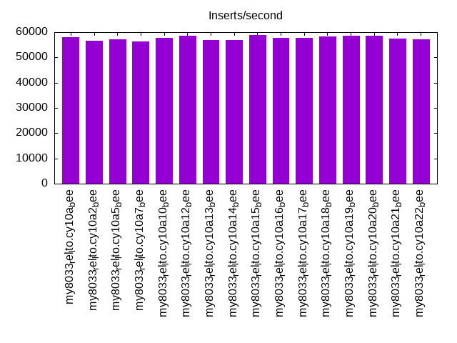
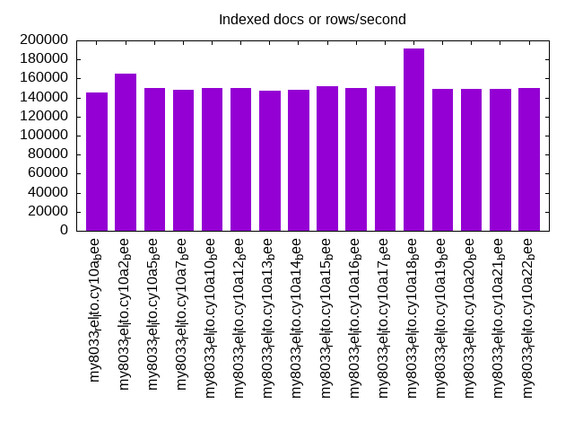
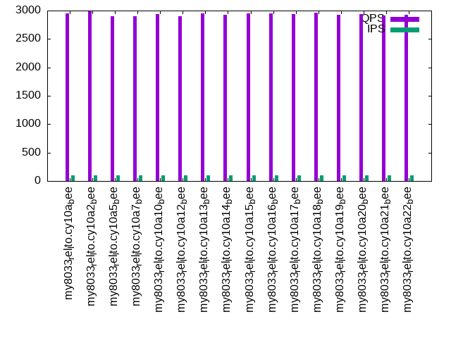

Introduction
This is a report for the insert benchmark with 20M docs and 1 client(s). It is generated by scripts (bash, awk, sed) and Tufte might not be impressed. An overview of the insert benchmark is here and a short update is here. Below, by DBMS, I mean DBMS+version.config. An example is my8020.c10b40 where my means MySQL, 8020 is version 8.0.20 and c10b40 is the name for the configuration file.
The test server has 8 AMD cores, 16G RAM and an NVMe SSD. It is described here as the Beelink. The benchmark was run with 1 client and there were 1 or 3 connections per client (1 for queries or inserts without rate limits, 1+1 for rate limited inserts+deletes). There is 1 table. It loads 20M rows without secondary indexes, creates secondary indexes, then inserts 50M rows with a delete per insert to avoid growing the table. It then does 3 read+write tests for 3600s each that do queries as fast as possible with 100, 500 and then 1000 inserts/second/client concurrent with the queries and 1000 deletes/second to avoid growing the table. The database is (or should be) cached by InnoDB.
The tested DBMS are:
- my8033_rel_lto.cy10a_bee - InnoDB and MySQL 8.0.33, rel_lto build, cy10a_bee config, compiled with CMAKE_BUILD_TYPE=Release, base config
- my8033_rel_lto.cy10a2_bee - InnoDB and MySQL 8.0.33, rel_lto build, cy10a2_bee config, compiled with CMAKE_BUILD_TYPE=Release, adds innodb_io_capacity=20k, innodb_io_capacity_max=40k
- my8033_rel_lto.cy10a5_bee - InnoDB and MySQL 8.0.33, rel_lto build, cy10a5_bee config, compiled with CMAKE_BUILD_TYPE=Release, adds innodb_change_buffer=none
- my8033_rel_lto.cy10a7_bee - InnoDB and MySQL 8.0.33, rel_lto build, cy10a7_bee config, compiled with CMAKE_BUILD_TYPE=Release, adds innodb_lru_scan_depth=2048
- my8033_rel_lto.cy10a10_bee - InnoDB and MySQL 8.0.33, rel_lto build, cy10a10_bee config, compiled with CMAKE_BUILD_TYPE=Release, adds innodb_purge_threads=4, innodb_read_io_threads=4, innodb_write_io_threads=4, innodb_page_cleaners=4, innodb_buffer_pool_instances=4
- my8033_rel_lto.cy10a12_bee - InnoDB and MySQL 8.0.33, rel_lto build, cy10a12_bee config, compiled with CMAKE_BUILD_TYPE=Release, adds innodb_redo_log_capacity=32G
- my8033_rel_lto.cy10a13_bee - InnoDB and MySQL 8.0.33, rel_lto build, cy10a13_bee config, compiled with CMAKE_BUILD_TYPE=Release, adds innodb_max_purge_lag=50k, innodb_max_purge_lag_delay=1M, innodb_purge_threads=4
- my8033_rel_lto.cy10a14_bee - InnoDB and MySQL 8.0.33, rel_lto build, cy10a14_bee config, compiled with CMAKE_BUILD_TYPE=Release, adds innodb_change_buffering=inserts
- my8033_rel_lto.cy10a15_bee - InnoDB and MySQL 8.0.33, rel_lto build, cy10a15_bee config, compiled with CMAKE_BUILD_TYPE=Release, adds innodb_idle_flush_pct=default
- my8033_rel_lto.cy10a16_bee - InnoDB and MySQL 8.0.33, rel_lto build, cy10a16_bee config, compiled with CMAKE_BUILD_TYPE=Release, adds innodb_io_capacity=2k, innodb_io_capacity_max =4k
- my8033_rel_lto.cy10a17_bee - InnoDB and MySQL 8.0.33, rel_lto build, cy10a17_bee config, compiled with CMAKE_BUILD_TYPE=Release, adds innodb_doublewrite=OFF
- my8033_rel_lto.cy10a18_bee - InnoDB and MySQL 8.0.33, rel_lto build, cy10a18_bee config, compiled with CMAKE_BUILD_TYPE=Release, adds innodb_buffer_pool_instances=2
- my8033_rel_lto.cy10a19_bee - InnoDB and MySQL 8.0.33, rel_lto build, cy10a19_bee config, compiled with CMAKE_BUILD_TYPE=Release, adds innodb_max_dirty_pages_pct_lwm=20, innodb_max_dirty_pages_pct=50
- my8033_rel_lto.cy10a20_bee - InnoDB and MySQL 8.0.33, rel_lto build, cy10a20_bee config, compiled with CMAKE_BUILD_TYPE=Release, adds innodb_max_purge_lag=200k, innodb_max_purge_lag_delay=1M, innodb_purge_threads=4
- my8033_rel_lto.cy10a21_bee - InnoDB and MySQL 8.0.33, rel_lto build, cy10a21_bee config, compiled with CMAKE_BUILD_TYPE=Release, adds innodb_max_purge_lag=500k, innodb_max_purge_lag_delay=1M, innodb_purge_threads=4
- my8033_rel_lto.cy10a22_bee - InnoDB and MySQL 8.0.33, rel_lto build, cy10a12_bee config, compiled with CMAKE_BUILD_TYPE=Release, combines a20 + a10
Contents
- Summary
- l.i0: load without secondary indexes
- l.x: create secondary indexes
- l.i1: continue load after secondary indexes created
- q100.1: range queries with 100 insert/s per client
- q500.1: range queries with 500 insert/s per client
- q1000.1: range queries with 1000 insert/s per client
Summary
The numbers are inserts/s for l.i0 and l.i1, indexed docs (or rows) /s for l.x and queries/s for q100, q500, q1000. The values are the average rate over the entire test for inserts (IPS) and queries (QPS). The range of values for IPS and QPS is split into 3 parts: bottom 25%, middle 50%, top 25%. Values in the bottom 25% have a red background, values in the top 25% have a green background and values in the middle have no color. A gray background is used for values that can be ignored because the DBMS did not sustain the target insert rate. Red backgrounds are not used when the minimum value is within 80% of the max value.
| dbms | l.i0 | l.x | l.i1 | q100.1 | q500.1 | q1000.1 |
|---|---|---|---|---|---|---|
| my8033_rel_lto.cy10a_bee | 58140 | 145652 | 16966 | 2953 | 2962 | 2983 |
| my8033_rel_lto.cy10a2_bee | 56657 | 164754 | 16700 | 2990 | 2989 | 3002 |
| my8033_rel_lto.cy10a5_bee | 57143 | 150000 | 16972 | 2903 | 2949 | 2963 |
| my8033_rel_lto.cy10a7_bee | 56180 | 147794 | 16807 | 2901 | 2934 | 2955 |
| my8033_rel_lto.cy10a10_bee | 57637 | 150000 | 16915 | 2933 | 2960 | 2981 |
| my8033_rel_lto.cy10a12_bee | 58651 | 150000 | 17538 | 2906 | 2914 | 2914 |
| my8033_rel_lto.cy10a13_bee | 56980 | 146715 | 16801 | 2952 | 2958 | 2998 |
| my8033_rel_lto.cy10a14_bee | 56980 | 147794 | 16869 | 2925 | 2919 | 2957 |
| my8033_rel_lto.cy10a15_bee | 58997 | 152273 | 17065 | 2952 | 2958 | 2989 |
| my8033_rel_lto.cy10a16_bee | 57637 | 150000 | 17349 | 2953 | 2978 | 2981 |
| my8033_rel_lto.cy10a17_bee | 57803 | 152273 | 17053 | 2937 | 2929 | 2979 |
| my8033_rel_lto.cy10a18_bee | 58309 | 191428 | 16644 | 2967 | 2951 | 2976 |
| my8033_rel_lto.cy10a19_bee | 58651 | 148889 | 16955 | 2931 | 2964 | 2953 |
| my8033_rel_lto.cy10a20_bee | 58651 | 148889 | 17036 | 2932 | 2955 | 2986 |
| my8033_rel_lto.cy10a21_bee | 57471 | 148889 | 16920 | 2914 | 2947 | 2997 |
| my8033_rel_lto.cy10a22_bee | 57306 | 150000 | 16880 | 2926 | 2986 | 3031 |
This table has relative throughput, throughput for the DBMS relative to the DBMS in the first line, using the absolute throughput from the previous table. Values less than 0.95 have a yellow background. Values greater than 1.05 have a blue background.
| dbms | l.i0 | l.x | l.i1 | q100.1 | q500.1 | q1000.1 |
|---|---|---|---|---|---|---|
| my8033_rel_lto.cy10a_bee | 1.00 | 1.00 | 1.00 | 1.00 | 1.00 | 1.00 |
| my8033_rel_lto.cy10a2_bee | 0.97 | 1.13 | 0.98 | 1.01 | 1.01 | 1.01 |
| my8033_rel_lto.cy10a5_bee | 0.98 | 1.03 | 1.00 | 0.98 | 1.00 | 0.99 |
| my8033_rel_lto.cy10a7_bee | 0.97 | 1.01 | 0.99 | 0.98 | 0.99 | 0.99 |
| my8033_rel_lto.cy10a10_bee | 0.99 | 1.03 | 1.00 | 0.99 | 1.00 | 1.00 |
| my8033_rel_lto.cy10a12_bee | 1.01 | 1.03 | 1.03 | 0.98 | 0.98 | 0.98 |
| my8033_rel_lto.cy10a13_bee | 0.98 | 1.01 | 0.99 | 1.00 | 1.00 | 1.01 |
| my8033_rel_lto.cy10a14_bee | 0.98 | 1.01 | 0.99 | 0.99 | 0.99 | 0.99 |
| my8033_rel_lto.cy10a15_bee | 1.01 | 1.05 | 1.01 | 1.00 | 1.00 | 1.00 |
| my8033_rel_lto.cy10a16_bee | 0.99 | 1.03 | 1.02 | 1.00 | 1.01 | 1.00 |
| my8033_rel_lto.cy10a17_bee | 0.99 | 1.05 | 1.01 | 0.99 | 0.99 | 1.00 |
| my8033_rel_lto.cy10a18_bee | 1.00 | 1.31 | 0.98 | 1.00 | 1.00 | 1.00 |
| my8033_rel_lto.cy10a19_bee | 1.01 | 1.02 | 1.00 | 0.99 | 1.00 | 0.99 |
| my8033_rel_lto.cy10a20_bee | 1.01 | 1.02 | 1.00 | 0.99 | 1.00 | 1.00 |
| my8033_rel_lto.cy10a21_bee | 0.99 | 1.02 | 1.00 | 0.99 | 0.99 | 1.00 |
| my8033_rel_lto.cy10a22_bee | 0.99 | 1.03 | 0.99 | 0.99 | 1.01 | 1.02 |
This lists the average rate of inserts/s for the tests that do inserts concurrent with queries. For such tests the query rate is listed in the table above. The read+write tests are setup so that the insert rate should match the target rate every second. Cells that are not at least 95% of the target have a red background to indicate a failure to satisfy the target.
| dbms | q100.1 | q500.1 | q1000.1 |
|---|---|---|---|
| my8033_rel_lto.cy10a_bee | 100 | 499 | 997 |
| my8033_rel_lto.cy10a2_bee | 100 | 499 | 998 |
| my8033_rel_lto.cy10a5_bee | 100 | 499 | 999 |
| my8033_rel_lto.cy10a7_bee | 100 | 499 | 998 |
| my8033_rel_lto.cy10a10_bee | 100 | 499 | 999 |
| my8033_rel_lto.cy10a12_bee | 100 | 499 | 998 |
| my8033_rel_lto.cy10a13_bee | 100 | 499 | 998 |
| my8033_rel_lto.cy10a14_bee | 100 | 499 | 998 |
| my8033_rel_lto.cy10a15_bee | 100 | 499 | 999 |
| my8033_rel_lto.cy10a16_bee | 100 | 498 | 998 |
| my8033_rel_lto.cy10a17_bee | 100 | 499 | 998 |
| my8033_rel_lto.cy10a18_bee | 100 | 499 | 997 |
| my8033_rel_lto.cy10a19_bee | 100 | 499 | 998 |
| my8033_rel_lto.cy10a20_bee | 100 | 499 | 998 |
| my8033_rel_lto.cy10a21_bee | 100 | 499 | 996 |
| my8033_rel_lto.cy10a22_bee | 100 | 498 | 996 |
| target | 100 | 500 | 1000 |
l.i0
l.i0: load without secondary indexes. Graphs for performance per 1-second interval are here.
Average throughput:
Insert response time histogram: each cell has the percentage of responses that take <= the time in the header and max is the max response time in seconds. For the max column values in the top 25% of the range have a red background and in the bottom 25% of the range have a green background. The red background is not used when the min value is within 80% of the max value.
| dbms | 256us | 1ms | 4ms | 16ms | 64ms | 256ms | 1s | 4s | 16s | gt | max |
|---|---|---|---|---|---|---|---|---|---|---|---|
| my8033_rel_lto.cy10a_bee | 99.412 | 0.429 | 0.155 | 0.003 | 0.088 | ||||||
| my8033_rel_lto.cy10a2_bee | 99.406 | 0.460 | 0.131 | 0.003 | 0.084 | ||||||
| my8033_rel_lto.cy10a5_bee | 99.412 | 0.445 | 0.141 | 0.003 | 0.077 | ||||||
| my8033_rel_lto.cy10a7_bee | 99.407 | 0.445 | 0.145 | 0.003 | 0.070 | ||||||
| my8033_rel_lto.cy10a10_bee | 99.406 | 0.454 | 0.136 | 0.003 | 0.084 | ||||||
| my8033_rel_lto.cy10a12_bee | 99.437 | 0.432 | 0.128 | 0.003 | 0.070 | ||||||
| my8033_rel_lto.cy10a13_bee | 99.407 | 0.450 | 0.141 | 0.003 | 0.071 | ||||||
| my8033_rel_lto.cy10a14_bee | 99.408 | 0.463 | 0.126 | 0.003 | 0.077 | ||||||
| my8033_rel_lto.cy10a15_bee | 99.418 | 0.445 | 0.134 | 0.003 | 0.068 | ||||||
| my8033_rel_lto.cy10a16_bee | 99.420 | 0.445 | 0.132 | 0.003 | 0.073 | ||||||
| my8033_rel_lto.cy10a17_bee | 99.421 | 0.437 | 0.139 | 0.003 | 0.071 | ||||||
| my8033_rel_lto.cy10a18_bee | 99.423 | 0.450 | 0.125 | 0.003 | 0.078 | ||||||
| my8033_rel_lto.cy10a19_bee | 99.421 | 0.438 | 0.138 | 0.003 | 0.075 | ||||||
| my8033_rel_lto.cy10a20_bee | 99.429 | 0.453 | 0.117 | 0.002 | 0.073 | ||||||
| my8033_rel_lto.cy10a21_bee | 99.410 | 0.447 | 0.141 | 0.003 | 0.069 | ||||||
| my8033_rel_lto.cy10a22_bee | 99.412 | 0.447 | 0.139 | 0.002 | 0.069 |
Performance metrics for the DBMS listed above. Some are normalized by throughput, others are not. Legend for results is here.
ips qps rps rmbps wps wmbps rpq rkbpq wpi wkbpi csps cpups cspq cpupq dbgb1 dbgb2 rss maxop p50 p99 tag 58140 0 0 0.0 288.0 20.2 0.000 0.000 0.005 0.356 6745 20.3 0.116 28 1.3 9.9 2.5 0.088 58436 40395 20m.my8033_rel_lto.cy10a_bee 56657 0 0 0.0 282.7 19.8 0.000 0.000 0.005 0.357 6596 20.1 0.116 28 1.3 9.9 2.5 0.084 57137 49855 20m.my8033_rel_lto.cy10a2_bee 57143 0 0 0.0 283.2 19.9 0.000 0.000 0.005 0.357 6629 20.2 0.116 28 1.3 9.9 2.5 0.077 57454 51090 20m.my8033_rel_lto.cy10a5_bee 56180 0 0 0.0 279.0 19.5 0.000 0.000 0.005 0.356 6535 19.9 0.116 28 1.3 9.9 2.5 0.070 56563 50241 20m.my8033_rel_lto.cy10a7_bee 57637 0 0 0.0 277.9 19.9 0.000 0.000 0.005 0.353 6736 20.1 0.117 28 1.3 9.9 2.5 0.084 57936 49470 20m.my8033_rel_lto.cy10a10_bee 58651 0 0 0.0 78.4 15.1 0.000 0.000 0.001 0.264 6183 20.3 0.105 28 1.3 33.9 2.5 0.070 59062 52939 20m.my8033_rel_lto.cy10a12_bee 56980 0 0 0.0 281.5 19.8 0.000 0.000 0.005 0.355 6708 20.2 0.118 28 1.3 9.9 2.5 0.071 57240 51544 20m.my8033_rel_lto.cy10a13_bee 56980 0 0 0.0 282.8 19.8 0.000 0.000 0.005 0.356 6635 20.2 0.116 28 1.3 9.9 2.5 0.077 57432 51313 20m.my8033_rel_lto.cy10a14_bee 58997 0 0 0.0 292.8 20.6 0.000 0.000 0.005 0.357 6820 20.2 0.116 27 1.3 9.9 2.5 0.068 59535 40385 20m.my8033_rel_lto.cy10a15_bee 57637 0 0 0.0 233.1 18.7 0.000 0.000 0.004 0.333 6536 20.4 0.113 28 1.3 9.9 2.5 0.073 57851 51044 20m.my8033_rel_lto.cy10a16_bee 57803 0 0 0.0 234.9 17.1 0.000 0.000 0.004 0.302 6734 20.3 0.117 28 1.3 9.9 2.5 0.071 58035 51725 20m.my8033_rel_lto.cy10a17_bee 58309 0 0 0.0 279.5 20.1 0.000 0.000 0.005 0.353 6887 20.5 0.118 28 1.3 9.9 2.5 0.078 58635 50967 20m.my8033_rel_lto.cy10a18_bee 58651 0 0 0.0 290.1 20.4 0.000 0.000 0.005 0.356 6776 20.4 0.116 28 1.3 9.9 2.5 0.075 58939 52042 20m.my8033_rel_lto.cy10a19_bee 58651 0 0 0.0 290.0 20.4 0.000 0.000 0.005 0.356 6881 20.3 0.117 28 1.3 9.9 2.5 0.073 59034 41398 20m.my8033_rel_lto.cy10a20_bee 57471 0 0 0.0 284.3 20.0 0.000 0.000 0.005 0.356 6730 20.3 0.117 28 1.3 9.9 2.5 0.069 57813 51739 20m.my8033_rel_lto.cy10a21_bee 57306 0 0 0.0 277.6 19.8 0.000 0.000 0.005 0.354 6713 20.2 0.117 28 1.3 9.9 2.5 0.069 57562 51554 20m.my8033_rel_lto.cy10a22_bee
l.x
l.x: create secondary indexes.
Average throughput:
Performance metrics for the DBMS listed above. Some are normalized by throughput, others are not. Legend for results is here.
ips qps rps rmbps wps wmbps rpq rkbpq wpi wkbpi csps cpups cspq cpupq dbgb1 dbgb2 rss maxop p50 p99 tag 145652 0 732 47.6 2494.5 147.1 0.005 0.335 0.017 1.034 10009 42.2 0.069 23 3.0 11.5 3.9 0.011 NA NA 20m.my8033_rel_lto.cy10a_bee 164754 0 823 53.6 3091.4 170.4 0.005 0.333 0.019 1.059 11609 41.3 0.070 20 3.0 11.5 3.7 0.012 NA NA 20m.my8033_rel_lto.cy10a2_bee 150000 0 760 49.5 2262.4 147.2 0.005 0.338 0.015 1.005 9426 43.0 0.063 23 3.0 11.5 3.9 0.010 NA NA 20m.my8033_rel_lto.cy10a5_bee 147794 0 732 47.6 3018.1 155.3 0.005 0.330 0.020 1.076 10933 42.2 0.074 23 3.0 11.5 3.9 0.011 NA NA 20m.my8033_rel_lto.cy10a7_bee 150000 0 760 49.5 2203.3 146.6 0.005 0.338 0.015 1.001 9378 43.0 0.063 23 3.0 11.5 3.9 0.011 NA NA 20m.my8033_rel_lto.cy10a10_bee 150000 0 760 49.5 2177.7 145.7 0.005 0.338 0.015 0.995 9227 43.3 0.062 23 3.0 35.5 3.9 0.012 NA NA 20m.my8033_rel_lto.cy10a12_bee 146715 0 732 47.6 2697.9 150.3 0.005 0.333 0.018 1.049 10343 42.0 0.070 23 3.0 11.5 3.9 0.014 NA NA 20m.my8033_rel_lto.cy10a13_bee 147794 0 732 47.6 2806.6 152.0 0.005 0.330 0.019 1.053 10564 42.6 0.071 23 3.0 11.5 3.9 0.011 NA NA 20m.my8033_rel_lto.cy10a14_bee 152273 0 760 49.4 2715.1 159.6 0.005 0.333 0.018 1.073 10614 43.4 0.070 23 3.0 11.5 3.8 0.011 NA NA 20m.my8033_rel_lto.cy10a15_bee 150000 0 734 47.7 3037.2 155.8 0.005 0.325 0.020 1.064 10869 42.0 0.072 22 3.0 11.5 3.9 0.011 NA NA 20m.my8033_rel_lto.cy10a16_bee 152273 0 760 49.5 1831.7 139.7 0.005 0.333 0.012 0.939 9411 43.9 0.062 23 3.0 11.5 3.9 0.019 NA NA 20m.my8033_rel_lto.cy10a17_bee 191428 0 944 61.3 3923.0 200.1 0.005 0.328 0.020 1.070 10378 39.7 0.054 17 3.0 11.5 3.8 0.020 NA NA 20m.my8033_rel_lto.cy10a18_bee 148889 0 760 49.5 1977.8 143.1 0.005 0.340 0.013 0.984 9092 43.4 0.061 23 3.0 11.5 3.9 0.012 NA NA 20m.my8033_rel_lto.cy10a19_bee 148889 0 732 47.6 2962.0 154.4 0.005 0.328 0.020 1.062 10823 42.6 0.073 23 3.0 11.5 3.9 0.017 NA NA 20m.my8033_rel_lto.cy10a20_bee 148889 0 732 47.6 3027.3 155.4 0.005 0.328 0.020 1.069 10920 42.2 0.073 23 3.0 11.5 3.9 0.011 NA NA 20m.my8033_rel_lto.cy10a21_bee 150000 0 760 49.5 2430.5 149.7 0.005 0.338 0.016 1.022 9566 43.4 0.064 23 3.0 11.5 3.8 0.012 NA NA 20m.my8033_rel_lto.cy10a22_bee
l.i1
l.i1: continue load after secondary indexes created. Graphs for performance per 1-second interval are here.
Average throughput:

Insert response time histogram: each cell has the percentage of responses that take <= the time in the header and max is the max response time in seconds. For the max column values in the top 25% of the range have a red background and in the bottom 25% of the range have a green background. The red background is not used when the min value is within 80% of the max value.
| dbms | 256us | 1ms | 4ms | 16ms | 64ms | 256ms | 1s | 4s | 16s | gt | max |
|---|---|---|---|---|---|---|---|---|---|---|---|
| my8033_rel_lto.cy10a_bee | 95.814 | 3.989 | 0.195 | 0.002 | 0.105 | ||||||
| my8033_rel_lto.cy10a2_bee | 95.246 | 4.537 | 0.216 | 0.001 | 0.104 | ||||||
| my8033_rel_lto.cy10a5_bee | 95.780 | 4.028 | 0.191 | 0.001 | 0.104 | ||||||
| my8033_rel_lto.cy10a7_bee | 95.756 | 4.051 | 0.192 | 0.001 | 0.108 | ||||||
| my8033_rel_lto.cy10a10_bee | 95.589 | 4.209 | 0.200 | 0.002 | 0.107 | ||||||
| my8033_rel_lto.cy10a12_bee | 97.345 | 2.529 | 0.124 | 0.001 | 0.104 | ||||||
| my8033_rel_lto.cy10a13_bee | 95.672 | 4.122 | 0.203 | 0.003 | 0.107 | ||||||
| my8033_rel_lto.cy10a14_bee | 95.770 | 4.049 | 0.180 | 0.001 | 0.103 | ||||||
| my8033_rel_lto.cy10a15_bee | 95.834 | 3.986 | 0.178 | 0.001 | 0.104 | ||||||
| my8033_rel_lto.cy10a16_bee | 96.908 | 2.945 | 0.147 | 0.001 | 0.074 | ||||||
| my8033_rel_lto.cy10a17_bee | 96.110 | 3.714 | 0.175 | 0.001 | 0.104 | ||||||
| my8033_rel_lto.cy10a18_bee | 94.322 | 5.525 | 0.153 | 0.001 | 0.104 | ||||||
| my8033_rel_lto.cy10a19_bee | 95.612 | 4.210 | 0.178 | 0.001 | 0.107 | ||||||
| my8033_rel_lto.cy10a20_bee | 95.713 | 4.104 | 0.181 | 0.002 | 0.104 | ||||||
| my8033_rel_lto.cy10a21_bee | 95.697 | 4.113 | 0.187 | 0.002 | 0.109 | ||||||
| my8033_rel_lto.cy10a22_bee | 95.633 | 4.181 | 0.184 | 0.002 | 0.105 |
Delete response time histogram: each cell has the percentage of responses that take <= the time in the header and max is the max response time in seconds. For the max column values in the top 25% of the range have a red background and in the bottom 25% of the range have a green background. The red background is not used when the min value is within 80% of the max value.
| dbms | 256us | 1ms | 4ms | 16ms | 64ms | 256ms | 1s | 4s | 16s | gt | max |
|---|---|---|---|---|---|---|---|---|---|---|---|
| my8033_rel_lto.cy10a_bee | 97.072 | 2.853 | 0.075 | 0.001 | 0.104 | ||||||
| my8033_rel_lto.cy10a2_bee | 96.642 | 3.278 | 0.079 | 0.001 | 0.103 | ||||||
| my8033_rel_lto.cy10a5_bee | 97.012 | 2.912 | 0.075 | 0.001 | 0.103 | ||||||
| my8033_rel_lto.cy10a7_bee | 97.051 | 2.872 | 0.076 | 0.001 | 0.103 | ||||||
| my8033_rel_lto.cy10a10_bee | 96.822 | 3.099 | 0.077 | 0.002 | 0.105 | ||||||
| my8033_rel_lto.cy10a12_bee | 98.409 | 1.557 | 0.033 | 0.001 | 0.105 | ||||||
| my8033_rel_lto.cy10a13_bee | 96.937 | 2.982 | 0.078 | 0.003 | 0.105 | ||||||
| my8033_rel_lto.cy10a14_bee | 97.029 | 2.902 | 0.069 | 0.001 | 0.107 | ||||||
| my8033_rel_lto.cy10a15_bee | 97.060 | 2.879 | 0.061 | 0.001 | 0.103 | ||||||
| my8033_rel_lto.cy10a16_bee | 98.034 | 1.911 | 0.054 | nonzero | 0.071 | ||||||
| my8033_rel_lto.cy10a17_bee | 97.344 | 2.581 | 0.074 | nonzero | 0.103 | ||||||
| my8033_rel_lto.cy10a18_bee | 95.856 | 4.093 | 0.050 | 0.001 | 0.103 | ||||||
| my8033_rel_lto.cy10a19_bee | 96.858 | 3.078 | 0.064 | 0.001 | 0.103 | ||||||
| my8033_rel_lto.cy10a20_bee | 96.900 | 3.034 | 0.064 | 0.002 | 0.107 | ||||||
| my8033_rel_lto.cy10a21_bee | 96.933 | 3.001 | 0.064 | 0.002 | 0.104 | ||||||
| my8033_rel_lto.cy10a22_bee | 96.880 | 3.055 | 0.063 | 0.002 | 0.105 |
Performance metrics for the DBMS listed above. Some are normalized by throughput, others are not. Legend for results is here.
ips qps rps rmbps wps wmbps rpq rkbpq wpi wkbpi csps cpups cspq cpupq dbgb1 dbgb2 rss maxop p50 p99 tag 16966 0 31 0.5 3605.0 118.0 0.002 0.030 0.212 7.119 18949 36.3 1.117 171 4.3 13.1 5.6 0.105 17640 4345 20m.my8033_rel_lto.cy10a_bee 16700 0 31 0.5 4270.0 134.4 0.002 0.029 0.256 8.243 21101 36.2 1.264 173 4.3 13.0 5.6 0.104 17431 4447 20m.my8033_rel_lto.cy10a2_bee 16972 0 31 0.5 3648.6 119.0 0.002 0.030 0.215 7.182 19074 36.4 1.124 172 4.3 13.1 5.6 0.104 17641 4146 20m.my8033_rel_lto.cy10a5_bee 16807 0 31 0.5 3567.7 116.7 0.002 0.030 0.212 7.112 18782 36.2 1.118 172 4.3 13.1 5.6 0.108 17481 4245 20m.my8033_rel_lto.cy10a7_bee 16915 0 31 0.5 3656.4 118.8 0.002 0.030 0.216 7.192 41698 37.8 2.465 179 4.3 13.1 5.7 0.107 17531 4199 20m.my8033_rel_lto.cy10a10_bee 17538 0 32 0.5 1566.9 67.4 0.002 0.030 0.089 3.936 12575 36.3 0.717 166 4.4 37.1 5.7 0.104 18129 3948 20m.my8033_rel_lto.cy10a12_bee 16801 0 31 0.5 3622.6 117.8 0.002 0.030 0.216 7.182 41574 37.8 2.474 180 4.3 13.1 5.7 0.107 17383 4095 20m.my8033_rel_lto.cy10a13_bee 16869 0 31 0.5 3588.7 117.4 0.002 0.030 0.213 7.124 18832 36.4 1.116 173 4.3 13.1 5.7 0.103 17530 4095 20m.my8033_rel_lto.cy10a14_bee 17065 0 13 0.2 3668.9 119.6 0.001 0.012 0.215 7.176 19168 36.5 1.123 171 4.3 13.1 5.7 0.104 17731 4645 20m.my8033_rel_lto.cy10a15_bee 17349 0 32 0.5 2120.6 81.1 0.002 0.030 0.122 4.789 14192 36.3 0.818 167 4.4 13.1 5.7 0.074 17979 4349 20m.my8033_rel_lto.cy10a16_bee 17053 0 0 0.0 2950.0 75.0 0.000 0.000 0.173 4.503 18309 36.4 1.074 171 4.3 13.1 5.6 0.104 17688 4945 20m.my8033_rel_lto.cy10a17_bee 16644 0 31 0.5 3608.6 117.9 0.002 0.030 0.217 7.253 40201 36.9 2.415 177 4.3 13.0 5.6 0.104 17380 4545 20m.my8033_rel_lto.cy10a18_bee 16955 0 31 0.5 3908.1 125.4 0.002 0.030 0.231 7.576 19921 36.5 1.175 172 4.3 13.1 5.7 0.107 17646 4446 20m.my8033_rel_lto.cy10a19_bee 17036 0 32 0.5 3634.2 118.2 0.002 0.030 0.213 7.107 41803 37.9 2.454 178 4.4 13.1 5.7 0.104 17630 4045 20m.my8033_rel_lto.cy10a20_bee 16920 0 31 0.5 3635.0 118.3 0.002 0.030 0.215 7.158 41717 37.7 2.465 178 4.3 13.1 5.7 0.109 17544 4096 20m.my8033_rel_lto.cy10a21_bee 16880 0 31 0.5 3591.3 117.1 0.002 0.030 0.213 7.105 41463 37.7 2.456 179 4.3 13.1 5.7 0.105 17530 4394 20m.my8033_rel_lto.cy10a22_bee
q100.1
q100.1: range queries with 100 insert/s per client. Graphs for performance per 1-second interval are here.
Average throughput:
Query response time histogram: each cell has the percentage of responses that take <= the time in the header and max is the max response time in seconds. For max values in the top 25% of the range have a red background and in the bottom 25% of the range have a green background. The red background is not used when the min value is within 80% of the max value.
| dbms | 256us | 1ms | 4ms | 16ms | 64ms | 256ms | 1s | 4s | 16s | gt | max |
|---|---|---|---|---|---|---|---|---|---|---|---|
| my8033_rel_lto.cy10a_bee | 17.846 | 82.153 | 0.001 | nonzero | 0.005 | ||||||
| my8033_rel_lto.cy10a2_bee | 21.589 | 78.410 | 0.001 | nonzero | 0.005 | ||||||
| my8033_rel_lto.cy10a5_bee | 13.325 | 86.675 | 0.001 | nonzero | 0.004 | ||||||
| my8033_rel_lto.cy10a7_bee | 14.050 | 85.949 | 0.001 | nonzero | 0.004 | ||||||
| my8033_rel_lto.cy10a10_bee | 14.960 | 85.039 | 0.001 | nonzero | 0.006 | ||||||
| my8033_rel_lto.cy10a12_bee | 15.363 | 84.636 | 0.001 | nonzero | 0.004 | ||||||
| my8033_rel_lto.cy10a13_bee | 17.617 | 82.382 | 0.001 | nonzero | 0.004 | ||||||
| my8033_rel_lto.cy10a14_bee | 15.243 | 84.757 | 0.001 | 0.004 | |||||||
| my8033_rel_lto.cy10a15_bee | 17.770 | 82.229 | 0.001 | nonzero | 0.005 | ||||||
| my8033_rel_lto.cy10a16_bee | 18.643 | 81.356 | 0.001 | nonzero | 0.004 | ||||||
| my8033_rel_lto.cy10a17_bee | 17.233 | 82.766 | 0.001 | nonzero | 0.004 | ||||||
| my8033_rel_lto.cy10a18_bee | 19.731 | 80.268 | 0.001 | 0.004 | |||||||
| my8033_rel_lto.cy10a19_bee | 14.761 | 85.238 | 0.001 | nonzero | 0.006 | ||||||
| my8033_rel_lto.cy10a20_bee | 16.712 | 83.288 | nonzero | nonzero | 0.005 | ||||||
| my8033_rel_lto.cy10a21_bee | 14.931 | 85.068 | 0.001 | 0.004 | |||||||
| my8033_rel_lto.cy10a22_bee | 16.582 | 83.417 | 0.001 | 0.004 |
Insert response time histogram: each cell has the percentage of responses that take <= the time in the header and max is the max response time in seconds. For max values in the top 25% of the range have a red background and in the bottom 25% of the range have a green background. The red background is not used when the min value is within 80% of the max value.
| dbms | 256us | 1ms | 4ms | 16ms | 64ms | 256ms | 1s | 4s | 16s | gt | max |
|---|---|---|---|---|---|---|---|---|---|---|---|
| my8033_rel_lto.cy10a_bee | 99.417 | 0.569 | 0.014 | 0.017 | |||||||
| my8033_rel_lto.cy10a2_bee | 99.500 | 0.486 | 0.014 | 0.020 | |||||||
| my8033_rel_lto.cy10a5_bee | 99.597 | 0.361 | 0.042 | 0.030 | |||||||
| my8033_rel_lto.cy10a7_bee | 99.639 | 0.347 | 0.014 | 0.016 | |||||||
| my8033_rel_lto.cy10a10_bee | 99.403 | 0.556 | 0.042 | 0.025 | |||||||
| my8033_rel_lto.cy10a12_bee | 99.806 | 0.181 | 0.014 | 0.020 | |||||||
| my8033_rel_lto.cy10a13_bee | 99.500 | 0.472 | 0.028 | 0.024 | |||||||
| my8033_rel_lto.cy10a14_bee | 99.361 | 0.639 | 0.016 | ||||||||
| my8033_rel_lto.cy10a15_bee | 99.778 | 0.208 | 0.014 | 0.025 | |||||||
| my8033_rel_lto.cy10a16_bee | 99.556 | 0.444 | 0.015 | ||||||||
| my8033_rel_lto.cy10a17_bee | 99.708 | 0.278 | 0.014 | 0.025 | |||||||
| my8033_rel_lto.cy10a18_bee | 99.500 | 0.500 | 0.014 | ||||||||
| my8033_rel_lto.cy10a19_bee | 99.583 | 0.389 | 0.028 | 0.025 | |||||||
| my8033_rel_lto.cy10a20_bee | 99.597 | 0.403 | 0.016 | ||||||||
| my8033_rel_lto.cy10a21_bee | 99.569 | 0.417 | 0.014 | 0.025 | |||||||
| my8033_rel_lto.cy10a22_bee | 99.528 | 0.472 | 0.015 |
Delete response time histogram: each cell has the percentage of responses that take <= the time in the header and max is the max response time in seconds. For max values in the top 25% of the range have a red background and in the bottom 25% of the range have a green background. The red background is not used when the min value is within 80% of the max value.
| dbms | 256us | 1ms | 4ms | 16ms | 64ms | 256ms | 1s | 4s | 16s | gt | max |
|---|---|---|---|---|---|---|---|---|---|---|---|
| my8033_rel_lto.cy10a_bee | 99.542 | 0.458 | 0.013 | ||||||||
| my8033_rel_lto.cy10a2_bee | 99.694 | 0.306 | 0.012 | ||||||||
| my8033_rel_lto.cy10a5_bee | 99.681 | 0.292 | 0.028 | 0.030 | |||||||
| my8033_rel_lto.cy10a7_bee | 99.694 | 0.306 | 0.011 | ||||||||
| my8033_rel_lto.cy10a10_bee | 99.542 | 0.444 | 0.014 | 0.023 | |||||||
| my8033_rel_lto.cy10a12_bee | 99.833 | 0.167 | 0.014 | ||||||||
| my8033_rel_lto.cy10a13_bee | 99.639 | 0.333 | 0.028 | 0.025 | |||||||
| my8033_rel_lto.cy10a14_bee | 99.431 | 0.569 | 0.016 | ||||||||
| my8033_rel_lto.cy10a15_bee | 99.833 | 0.167 | 0.008 | ||||||||
| my8033_rel_lto.cy10a16_bee | 99.667 | 0.333 | 0.013 | ||||||||
| my8033_rel_lto.cy10a17_bee | 99.778 | 0.208 | 0.014 | 0.025 | |||||||
| my8033_rel_lto.cy10a18_bee | 99.583 | 0.417 | 0.011 | ||||||||
| my8033_rel_lto.cy10a19_bee | 99.708 | 0.278 | 0.014 | 0.025 | |||||||
| my8033_rel_lto.cy10a20_bee | 99.694 | 0.306 | 0.016 | ||||||||
| my8033_rel_lto.cy10a21_bee | 99.764 | 0.222 | 0.014 | 0.023 | |||||||
| my8033_rel_lto.cy10a22_bee | 99.667 | 0.333 | 0.011 |
Performance metrics for the DBMS listed above. Some are normalized by throughput, others are not. Legend for results is here.
ips qps rps rmbps wps wmbps rpq rkbpq wpi wkbpi csps cpups cspq cpupq dbgb1 dbgb2 rss maxop p50 p99 tag 100 2953 0 0.0 66.2 1.6 0.000 0.000 0.663 16.320 11905 12.5 4.032 339 4.3 13.1 5.7 0.005 2938 2812 20m.my8033_rel_lto.cy10a_bee 100 2990 0 0.0 91.3 2.3 0.000 0.000 0.915 23.868 12117 12.5 4.052 334 4.3 13.0 5.6 0.005 2973 2829 20m.my8033_rel_lto.cy10a2_bee 100 2903 0 0.0 70.4 1.7 0.000 0.000 0.706 17.598 11729 12.5 4.040 344 4.3 13.1 5.6 0.004 2891 2765 20m.my8033_rel_lto.cy10a5_bee 100 2901 0 0.0 65.8 1.6 0.000 0.000 0.659 16.198 11708 12.6 4.037 348 4.3 13.1 5.6 0.004 2877 2765 20m.my8033_rel_lto.cy10a7_bee 100 2933 0 0.0 98.0 2.5 0.000 0.000 0.982 25.535 12080 12.5 4.119 341 4.3 13.1 5.7 0.006 2910 2781 20m.my8033_rel_lto.cy10a10_bee 100 2906 0 0.0 49.7 1.2 0.000 0.000 0.499 12.068 11694 12.5 4.024 344 4.4 37.1 5.7 0.004 2893 2765 20m.my8033_rel_lto.cy10a12_bee 100 2952 0 0.0 67.9 1.6 0.000 0.000 0.680 16.791 12055 12.5 4.084 339 4.3 13.1 5.7 0.004 2925 2810 20m.my8033_rel_lto.cy10a13_bee 100 2925 0 0.0 70.1 1.7 0.000 0.000 0.703 17.552 11805 12.5 4.035 342 4.3 13.1 5.7 0.004 2909 2792 20m.my8033_rel_lto.cy10a14_bee 100 2952 0 0.0 69.6 1.7 0.000 0.000 0.698 17.365 11914 12.5 4.036 339 4.3 13.1 5.7 0.005 2940 2812 20m.my8033_rel_lto.cy10a15_bee 100 2953 0 0.0 62.8 1.5 0.000 0.000 0.629 15.421 11887 12.5 4.025 339 4.4 13.1 5.7 0.004 2939 2799 20m.my8033_rel_lto.cy10a16_bee 100 2937 0 0.0 51.0 0.9 0.000 0.000 0.512 9.255 11854 12.5 4.036 340 4.3 13.1 5.6 0.004 2925 2799 20m.my8033_rel_lto.cy10a17_bee 100 2967 0 0.0 117.3 3.0 0.000 0.000 1.177 30.665 12294 12.5 4.143 337 4.3 13.0 5.6 0.004 2956 2829 20m.my8033_rel_lto.cy10a18_bee 100 2931 0 0.0 95.8 2.4 0.000 0.000 0.960 24.738 11911 12.6 4.063 344 4.3 13.1 5.7 0.006 2911 2797 20m.my8033_rel_lto.cy10a19_bee 100 2932 0 0.0 72.7 1.8 0.000 0.000 0.728 18.104 12004 12.6 4.094 344 4.4 13.1 5.7 0.005 2910 2782 20m.my8033_rel_lto.cy10a20_bee 100 2914 0 0.0 67.4 1.6 0.000 0.000 0.676 16.636 11923 12.6 4.092 346 4.3 13.1 5.7 0.004 2893 2765 20m.my8033_rel_lto.cy10a21_bee 100 2926 0 0.0 74.8 1.9 0.000 0.000 0.750 19.367 12024 12.5 4.109 342 4.3 13.1 5.7 0.004 2909 2781 20m.my8033_rel_lto.cy10a22_bee
q500.1
q500.1: range queries with 500 insert/s per client. Graphs for performance per 1-second interval are here.
Average throughput:

Query response time histogram: each cell has the percentage of responses that take <= the time in the header and max is the max response time in seconds. For max values in the top 25% of the range have a red background and in the bottom 25% of the range have a green background. The red background is not used when the min value is within 80% of the max value.
| dbms | 256us | 1ms | 4ms | 16ms | 64ms | 256ms | 1s | 4s | 16s | gt | max |
|---|---|---|---|---|---|---|---|---|---|---|---|
| my8033_rel_lto.cy10a_bee | 18.029 | 81.970 | 0.001 | nonzero | 0.008 | ||||||
| my8033_rel_lto.cy10a2_bee | 21.222 | 78.777 | 0.001 | nonzero | 0.008 | ||||||
| my8033_rel_lto.cy10a5_bee | 17.009 | 82.990 | 0.001 | nonzero | 0.004 | ||||||
| my8033_rel_lto.cy10a7_bee | 16.192 | 83.807 | 0.001 | 0.004 | |||||||
| my8033_rel_lto.cy10a10_bee | 17.870 | 82.129 | 0.002 | nonzero | 0.004 | ||||||
| my8033_rel_lto.cy10a12_bee | 15.295 | 84.704 | 0.001 | nonzero | 0.004 | ||||||
| my8033_rel_lto.cy10a13_bee | 18.092 | 81.906 | 0.002 | nonzero | 0.007 | ||||||
| my8033_rel_lto.cy10a14_bee | 14.101 | 85.898 | 0.001 | nonzero | 0.008 | ||||||
| my8033_rel_lto.cy10a15_bee | 17.452 | 82.546 | 0.001 | nonzero | 0.010 | ||||||
| my8033_rel_lto.cy10a16_bee | 20.291 | 79.707 | 0.001 | 0.004 | |||||||
| my8033_rel_lto.cy10a17_bee | 16.321 | 83.678 | 0.001 | nonzero | 0.005 | ||||||
| my8033_rel_lto.cy10a18_bee | 18.284 | 81.715 | nonzero | 0.004 | |||||||
| my8033_rel_lto.cy10a19_bee | 17.800 | 82.198 | 0.001 | nonzero | 0.006 | ||||||
| my8033_rel_lto.cy10a20_bee | 18.075 | 81.924 | 0.001 | nonzero | 0.007 | ||||||
| my8033_rel_lto.cy10a21_bee | 17.779 | 82.219 | 0.001 | nonzero | 0.007 | ||||||
| my8033_rel_lto.cy10a22_bee | 20.460 | 79.539 | 0.002 | nonzero | 0.006 |
Insert response time histogram: each cell has the percentage of responses that take <= the time in the header and max is the max response time in seconds. For max values in the top 25% of the range have a red background and in the bottom 25% of the range have a green background. The red background is not used when the min value is within 80% of the max value.
| dbms | 256us | 1ms | 4ms | 16ms | 64ms | 256ms | 1s | 4s | 16s | gt | max |
|---|---|---|---|---|---|---|---|---|---|---|---|
| my8033_rel_lto.cy10a_bee | 99.086 | 0.892 | 0.022 | 0.041 | |||||||
| my8033_rel_lto.cy10a2_bee | 99.081 | 0.892 | 0.028 | 0.051 | |||||||
| my8033_rel_lto.cy10a5_bee | 99.278 | 0.700 | 0.019 | 0.003 | 0.103 | ||||||
| my8033_rel_lto.cy10a7_bee | 99.242 | 0.742 | 0.017 | 0.050 | |||||||
| my8033_rel_lto.cy10a10_bee | 98.983 | 0.981 | 0.036 | 0.042 | |||||||
| my8033_rel_lto.cy10a12_bee | 99.225 | 0.764 | 0.011 | 0.039 | |||||||
| my8033_rel_lto.cy10a13_bee | 99.275 | 0.694 | 0.031 | 0.043 | |||||||
| my8033_rel_lto.cy10a14_bee | 99.192 | 0.778 | 0.031 | 0.050 | |||||||
| my8033_rel_lto.cy10a15_bee | 99.239 | 0.742 | 0.019 | 0.050 | |||||||
| my8033_rel_lto.cy10a16_bee | 99.081 | 0.903 | 0.017 | 0.050 | |||||||
| my8033_rel_lto.cy10a17_bee | 99.067 | 0.903 | 0.031 | 0.052 | |||||||
| my8033_rel_lto.cy10a18_bee | 99.322 | 0.656 | 0.022 | 0.050 | |||||||
| my8033_rel_lto.cy10a19_bee | 99.131 | 0.847 | 0.022 | 0.042 | |||||||
| my8033_rel_lto.cy10a20_bee | 99.192 | 0.792 | 0.017 | 0.051 | |||||||
| my8033_rel_lto.cy10a21_bee | 99.067 | 0.908 | 0.025 | 0.040 | |||||||
| my8033_rel_lto.cy10a22_bee | 99.158 | 0.819 | 0.022 | 0.050 |
Delete response time histogram: each cell has the percentage of responses that take <= the time in the header and max is the max response time in seconds. For max values in the top 25% of the range have a red background and in the bottom 25% of the range have a green background. The red background is not used when the min value is within 80% of the max value.
| dbms | 256us | 1ms | 4ms | 16ms | 64ms | 256ms | 1s | 4s | 16s | gt | max |
|---|---|---|---|---|---|---|---|---|---|---|---|
| my8033_rel_lto.cy10a_bee | 99.492 | 0.494 | 0.014 | 0.051 | |||||||
| my8033_rel_lto.cy10a2_bee | 99.600 | 0.381 | 0.019 | 0.041 | |||||||
| my8033_rel_lto.cy10a5_bee | 99.669 | 0.314 | 0.014 | 0.003 | 0.102 | ||||||
| my8033_rel_lto.cy10a7_bee | 99.672 | 0.308 | 0.019 | 0.041 | |||||||
| my8033_rel_lto.cy10a10_bee | 99.394 | 0.583 | 0.022 | 0.049 | |||||||
| my8033_rel_lto.cy10a12_bee | 99.703 | 0.286 | 0.011 | 0.049 | |||||||
| my8033_rel_lto.cy10a13_bee | 99.642 | 0.344 | 0.014 | 0.050 | |||||||
| my8033_rel_lto.cy10a14_bee | 99.614 | 0.367 | 0.019 | 0.040 | |||||||
| my8033_rel_lto.cy10a15_bee | 99.572 | 0.414 | 0.014 | 0.040 | |||||||
| my8033_rel_lto.cy10a16_bee | 99.544 | 0.442 | 0.014 | 0.042 | |||||||
| my8033_rel_lto.cy10a17_bee | 99.550 | 0.428 | 0.022 | 0.062 | |||||||
| my8033_rel_lto.cy10a18_bee | 99.644 | 0.350 | 0.006 | 0.041 | |||||||
| my8033_rel_lto.cy10a19_bee | 99.464 | 0.522 | 0.014 | 0.050 | |||||||
| my8033_rel_lto.cy10a20_bee | 99.483 | 0.500 | 0.017 | 0.041 | |||||||
| my8033_rel_lto.cy10a21_bee | 99.531 | 0.456 | 0.014 | 0.030 | |||||||
| my8033_rel_lto.cy10a22_bee | 99.536 | 0.444 | 0.019 | 0.041 |
Performance metrics for the DBMS listed above. Some are normalized by throughput, others are not. Legend for results is here.
ips qps rps rmbps wps wmbps rpq rkbpq wpi wkbpi csps cpups cspq cpupq dbgb1 dbgb2 rss maxop p50 p99 tag 499 2962 0 0.0 184.0 5.1 0.000 0.000 0.369 10.503 12411 13.5 4.190 365 4.3 13.1 5.7 0.008 2941 2798 20m.my8033_rel_lto.cy10a_bee 499 2989 0 0.0 175.9 4.9 0.000 0.000 0.353 10.130 12478 13.5 4.175 361 4.3 13.0 5.6 0.008 2973 2829 20m.my8033_rel_lto.cy10a2_bee 499 2949 0 0.0 183.5 5.1 0.000 0.000 0.368 10.495 12350 13.5 4.187 366 4.3 13.1 5.7 0.004 2925 2796 20m.my8033_rel_lto.cy10a5_bee 499 2934 0 0.0 182.7 5.1 0.000 0.000 0.366 10.456 12278 13.4 4.185 365 4.3 13.1 5.6 0.004 2909 2781 20m.my8033_rel_lto.cy10a7_bee 499 2960 0 0.0 163.3 4.6 0.000 0.000 0.327 9.513 12997 13.4 4.391 362 4.3 13.1 5.7 0.004 2940 2797 20m.my8033_rel_lto.cy10a10_bee 499 2914 0 0.0 39.0 1.5 0.000 0.000 0.078 2.980 11762 13.4 4.037 368 4.4 37.1 5.7 0.004 2893 2781 20m.my8033_rel_lto.cy10a12_bee 499 2958 0 0.0 183.7 5.1 0.000 0.000 0.368 10.524 13074 13.5 4.419 365 4.3 13.1 5.7 0.007 2939 2797 20m.my8033_rel_lto.cy10a13_bee 499 2919 0 0.0 180.3 5.0 0.000 0.000 0.361 10.346 12221 13.4 4.187 367 4.3 13.1 5.7 0.008 2893 2766 20m.my8033_rel_lto.cy10a14_bee 499 2958 0 0.0 183.6 5.1 0.000 0.000 0.368 10.503 12379 13.4 4.185 362 4.3 13.1 5.7 0.010 2940 2808 20m.my8033_rel_lto.cy10a15_bee 498 2978 0 0.0 165.2 4.7 0.000 0.000 0.332 9.556 12417 13.5 4.170 363 4.4 13.1 5.7 0.004 2957 2827 20m.my8033_rel_lto.cy10a16_bee 499 2929 0 0.0 146.9 2.9 0.000 0.000 0.294 6.018 12263 13.4 4.187 366 4.3 13.1 5.6 0.005 2909 2797 20m.my8033_rel_lto.cy10a17_bee 499 2951 0 0.0 164.6 4.7 0.000 0.000 0.330 9.641 12997 13.4 4.404 363 4.3 13.0 5.6 0.004 2941 2813 20m.my8033_rel_lto.cy10a18_bee 499 2964 0 0.0 294.9 7.9 0.000 0.000 0.591 16.265 12760 13.4 4.305 362 4.3 13.1 5.7 0.006 2941 2798 20m.my8033_rel_lto.cy10a19_bee 499 2955 0 0.0 182.1 5.1 0.000 0.000 0.365 10.422 13040 13.4 4.413 363 4.4 13.1 5.7 0.007 2926 2797 20m.my8033_rel_lto.cy10a20_bee 499 2947 0 0.0 182.5 5.1 0.000 0.000 0.366 10.429 13029 13.4 4.421 364 4.3 13.1 5.7 0.007 2925 2797 20m.my8033_rel_lto.cy10a21_bee 498 2986 0 0.0 172.7 4.9 0.000 0.000 0.347 10.026 13332 13.6 4.465 364 4.3 13.1 5.7 0.006 2957 2797 20m.my8033_rel_lto.cy10a22_bee
q1000.1
q1000.1: range queries with 1000 insert/s per client. Graphs for performance per 1-second interval are here.
Average throughput:
Query response time histogram: each cell has the percentage of responses that take <= the time in the header and max is the max response time in seconds. For max values in the top 25% of the range have a red background and in the bottom 25% of the range have a green background. The red background is not used when the min value is within 80% of the max value.
| dbms | 256us | 1ms | 4ms | 16ms | 64ms | 256ms | 1s | 4s | 16s | gt | max |
|---|---|---|---|---|---|---|---|---|---|---|---|
| my8033_rel_lto.cy10a_bee | 20.116 | 79.881 | 0.003 | nonzero | 0.008 | ||||||
| my8033_rel_lto.cy10a2_bee | 21.522 | 78.475 | 0.003 | nonzero | 0.006 | ||||||
| my8033_rel_lto.cy10a5_bee | 17.749 | 82.248 | 0.002 | nonzero | 0.009 | ||||||
| my8033_rel_lto.cy10a7_bee | 17.164 | 82.833 | 0.003 | nonzero | 0.008 | ||||||
| my8033_rel_lto.cy10a10_bee | 18.552 | 81.445 | 0.003 | nonzero | 0.007 | ||||||
| my8033_rel_lto.cy10a12_bee | 14.326 | 85.672 | 0.002 | nonzero | 0.006 | ||||||
| my8033_rel_lto.cy10a13_bee | 20.422 | 79.575 | 0.003 | nonzero | 0.008 | ||||||
| my8033_rel_lto.cy10a14_bee | 17.213 | 82.784 | 0.003 | nonzero | 0.005 | ||||||
| my8033_rel_lto.cy10a15_bee | 19.993 | 80.005 | 0.003 | nonzero | 0.010 | ||||||
| my8033_rel_lto.cy10a16_bee | 20.269 | 79.728 | 0.002 | nonzero | 0.008 | ||||||
| my8033_rel_lto.cy10a17_bee | 19.482 | 80.515 | 0.003 | nonzero | 0.008 | ||||||
| my8033_rel_lto.cy10a18_bee | 20.045 | 79.953 | 0.002 | nonzero | 0.005 | ||||||
| my8033_rel_lto.cy10a19_bee | 17.828 | 82.169 | 0.003 | nonzero | 0.006 | ||||||
| my8033_rel_lto.cy10a20_bee | 19.677 | 80.319 | 0.004 | nonzero | 0.007 | ||||||
| my8033_rel_lto.cy10a21_bee | 20.991 | 79.006 | 0.003 | nonzero | 0.009 | ||||||
| my8033_rel_lto.cy10a22_bee | 23.783 | 76.213 | 0.004 | nonzero | 0.011 |
Insert response time histogram: each cell has the percentage of responses that take <= the time in the header and max is the max response time in seconds. For max values in the top 25% of the range have a red background and in the bottom 25% of the range have a green background. The red background is not used when the min value is within 80% of the max value.
| dbms | 256us | 1ms | 4ms | 16ms | 64ms | 256ms | 1s | 4s | 16s | gt | max |
|---|---|---|---|---|---|---|---|---|---|---|---|
| my8033_rel_lto.cy10a_bee | 97.456 | 2.518 | 0.026 | 0.053 | |||||||
| my8033_rel_lto.cy10a2_bee | 97.389 | 2.576 | 0.035 | 0.061 | |||||||
| my8033_rel_lto.cy10a5_bee | 97.749 | 2.214 | 0.037 | 0.043 | |||||||
| my8033_rel_lto.cy10a7_bee | 97.507 | 2.467 | 0.026 | 0.043 | |||||||
| my8033_rel_lto.cy10a10_bee | 98.153 | 1.828 | 0.019 | 0.050 | |||||||
| my8033_rel_lto.cy10a12_bee | 97.447 | 2.544 | 0.008 | 0.046 | |||||||
| my8033_rel_lto.cy10a13_bee | 98.101 | 1.865 | 0.033 | 0.042 | |||||||
| my8033_rel_lto.cy10a14_bee | 97.104 | 2.874 | 0.022 | 0.051 | |||||||
| my8033_rel_lto.cy10a15_bee | 97.467 | 2.511 | 0.022 | 0.051 | |||||||
| my8033_rel_lto.cy10a16_bee | 97.264 | 2.707 | 0.029 | 0.053 | |||||||
| my8033_rel_lto.cy10a17_bee | 97.457 | 2.515 | 0.026 | 0.001 | 0.105 | ||||||
| my8033_rel_lto.cy10a18_bee | 97.949 | 2.032 | 0.019 | 0.044 | |||||||
| my8033_rel_lto.cy10a19_bee | 97.478 | 2.496 | 0.026 | 0.051 | |||||||
| my8033_rel_lto.cy10a20_bee | 98.206 | 1.772 | 0.022 | 0.041 | |||||||
| my8033_rel_lto.cy10a21_bee | 98.244 | 1.731 | 0.025 | 0.041 | |||||||
| my8033_rel_lto.cy10a22_bee | 98.094 | 1.875 | 0.026 | 0.004 | 0.105 |
Delete response time histogram: each cell has the percentage of responses that take <= the time in the header and max is the max response time in seconds. For max values in the top 25% of the range have a red background and in the bottom 25% of the range have a green background. The red background is not used when the min value is within 80% of the max value.
| dbms | 256us | 1ms | 4ms | 16ms | 64ms | 256ms | 1s | 4s | 16s | gt | max |
|---|---|---|---|---|---|---|---|---|---|---|---|
| my8033_rel_lto.cy10a_bee | 99.340 | 0.642 | 0.018 | 0.050 | |||||||
| my8033_rel_lto.cy10a2_bee | 99.450 | 0.533 | 0.017 | 0.050 | |||||||
| my8033_rel_lto.cy10a5_bee | 99.586 | 0.397 | 0.017 | 0.032 | |||||||
| my8033_rel_lto.cy10a7_bee | 99.569 | 0.414 | 0.017 | 0.051 | |||||||
| my8033_rel_lto.cy10a10_bee | 99.468 | 0.521 | 0.011 | 0.050 | |||||||
| my8033_rel_lto.cy10a12_bee | 99.594 | 0.399 | 0.007 | 0.057 | |||||||
| my8033_rel_lto.cy10a13_bee | 99.433 | 0.543 | 0.024 | 0.049 | |||||||
| my8033_rel_lto.cy10a14_bee | 99.413 | 0.574 | 0.014 | 0.053 | |||||||
| my8033_rel_lto.cy10a15_bee | 99.393 | 0.592 | 0.015 | 0.042 | |||||||
| my8033_rel_lto.cy10a16_bee | 99.522 | 0.457 | 0.021 | 0.042 | |||||||
| my8033_rel_lto.cy10a17_bee | 99.469 | 0.511 | 0.018 | 0.001 | 0.105 | ||||||
| my8033_rel_lto.cy10a18_bee | 99.331 | 0.660 | 0.010 | 0.051 | |||||||
| my8033_rel_lto.cy10a19_bee | 99.489 | 0.490 | 0.021 | 0.049 | |||||||
| my8033_rel_lto.cy10a20_bee | 99.497 | 0.487 | 0.015 | 0.050 | |||||||
| my8033_rel_lto.cy10a21_bee | 99.485 | 0.497 | 0.018 | 0.049 | |||||||
| my8033_rel_lto.cy10a22_bee | 99.346 | 0.632 | 0.018 | 0.004 | 0.106 |
Performance metrics for the DBMS listed above. Some are normalized by throughput, others are not. Legend for results is here.
ips qps rps rmbps wps wmbps rpq rkbpq wpi wkbpi csps cpups cspq cpupq dbgb1 dbgb2 rss maxop p50 p99 tag 997 2983 0 0.0 382.7 10.7 0.000 0.000 0.384 11.027 13301 14.7 4.458 394 4.3 13.1 5.7 0.008 2959 2813 20m.my8033_rel_lto.cy10a_bee 998 3002 0 0.0 369.2 10.4 0.000 0.000 0.370 10.664 13300 14.7 4.431 392 4.3 13.0 5.6 0.006 2973 2829 20m.my8033_rel_lto.cy10a2_bee 999 2963 0 0.0 363.7 10.3 0.000 0.000 0.364 10.519 13134 14.8 4.432 400 4.3 13.1 5.7 0.009 2940 2782 20m.my8033_rel_lto.cy10a5_bee 998 2955 0 0.0 380.8 10.7 0.000 0.000 0.381 10.968 13163 14.7 4.454 398 4.3 13.1 5.6 0.008 2927 2781 20m.my8033_rel_lto.cy10a7_bee 999 2981 0 0.0 336.5 9.6 0.000 0.000 0.337 9.858 14451 14.7 4.847 394 4.3 13.1 5.7 0.007 2956 2797 20m.my8033_rel_lto.cy10a10_bee 998 2914 0 0.0 109.2 3.9 0.000 0.000 0.109 3.997 12149 14.6 4.169 401 4.4 37.1 5.7 0.006 2893 2765 20m.my8033_rel_lto.cy10a12_bee 998 2998 0 0.0 376.1 10.6 0.000 0.000 0.377 10.840 14641 14.7 4.884 392 4.3 13.1 5.7 0.008 2973 2813 20m.my8033_rel_lto.cy10a13_bee 998 2957 0 0.0 363.9 10.3 0.000 0.000 0.364 10.537 13125 14.7 4.439 398 4.3 13.1 5.7 0.005 2939 2795 20m.my8033_rel_lto.cy10a14_bee 999 2989 0 0.0 366.5 10.3 0.000 0.000 0.367 10.596 13252 14.7 4.434 393 4.3 13.1 5.7 0.010 2970 2813 20m.my8033_rel_lto.cy10a15_bee 998 2981 0 0.0 257.5 7.6 0.000 0.000 0.258 7.760 12886 14.8 4.323 397 4.4 13.1 5.7 0.008 2957 2813 20m.my8033_rel_lto.cy10a16_bee 998 2979 0 0.0 293.6 5.9 0.000 0.000 0.294 6.043 13189 14.7 4.427 395 4.3 13.1 5.6 0.008 2957 2813 20m.my8033_rel_lto.cy10a17_bee 997 2976 0 0.0 335.4 9.6 0.000 0.000 0.336 9.881 14503 14.6 4.873 392 4.3 13.0 5.6 0.005 2957 2812 20m.my8033_rel_lto.cy10a18_bee 998 2953 0 0.0 586.6 15.8 0.000 0.000 0.588 16.239 13839 14.9 4.687 404 4.3 13.1 5.7 0.006 2925 2781 20m.my8033_rel_lto.cy10a19_bee 998 2986 0 0.0 365.4 10.3 0.000 0.000 0.366 10.576 14573 14.7 4.881 394 4.4 13.1 5.7 0.007 2957 2797 20m.my8033_rel_lto.cy10a20_bee 996 2997 0 0.0 377.5 10.6 0.000 0.000 0.379 10.901 14657 14.8 4.891 395 4.3 13.1 5.7 0.009 2973 2797 20m.my8033_rel_lto.cy10a21_bee 996 3031 0 0.0 340.0 9.7 0.000 0.000 0.341 9.980 14839 14.9 4.896 393 4.3 13.1 5.7 0.011 3005 2800 20m.my8033_rel_lto.cy10a22_bee
l.i0
l.i0: load without secondary indexes
Performance metrics for all DBMS, not just the ones listed above. Some are normalized by throughput, others are not. Legend for results is here.
ips qps rps rmbps wps wmbps rpq rkbpq wpi wkbpi csps cpups cspq cpupq dbgb1 dbgb2 rss maxop p50 p99 tag 58140 0 0 0.0 288.0 20.2 0.000 0.000 0.005 0.356 6745 20.3 0.116 28 1.3 9.9 2.5 0.088 58436 40395 20m.my8033_rel_lto.cy10a_bee 56657 0 0 0.0 282.7 19.8 0.000 0.000 0.005 0.357 6596 20.1 0.116 28 1.3 9.9 2.5 0.084 57137 49855 20m.my8033_rel_lto.cy10a2_bee 57143 0 0 0.0 283.2 19.9 0.000 0.000 0.005 0.357 6629 20.2 0.116 28 1.3 9.9 2.5 0.077 57454 51090 20m.my8033_rel_lto.cy10a5_bee 56180 0 0 0.0 279.0 19.5 0.000 0.000 0.005 0.356 6535 19.9 0.116 28 1.3 9.9 2.5 0.070 56563 50241 20m.my8033_rel_lto.cy10a7_bee 57637 0 0 0.0 277.9 19.9 0.000 0.000 0.005 0.353 6736 20.1 0.117 28 1.3 9.9 2.5 0.084 57936 49470 20m.my8033_rel_lto.cy10a10_bee 58651 0 0 0.0 78.4 15.1 0.000 0.000 0.001 0.264 6183 20.3 0.105 28 1.3 33.9 2.5 0.070 59062 52939 20m.my8033_rel_lto.cy10a12_bee 56980 0 0 0.0 281.5 19.8 0.000 0.000 0.005 0.355 6708 20.2 0.118 28 1.3 9.9 2.5 0.071 57240 51544 20m.my8033_rel_lto.cy10a13_bee 56980 0 0 0.0 282.8 19.8 0.000 0.000 0.005 0.356 6635 20.2 0.116 28 1.3 9.9 2.5 0.077 57432 51313 20m.my8033_rel_lto.cy10a14_bee 58997 0 0 0.0 292.8 20.6 0.000 0.000 0.005 0.357 6820 20.2 0.116 27 1.3 9.9 2.5 0.068 59535 40385 20m.my8033_rel_lto.cy10a15_bee 57637 0 0 0.0 233.1 18.7 0.000 0.000 0.004 0.333 6536 20.4 0.113 28 1.3 9.9 2.5 0.073 57851 51044 20m.my8033_rel_lto.cy10a16_bee 57803 0 0 0.0 234.9 17.1 0.000 0.000 0.004 0.302 6734 20.3 0.117 28 1.3 9.9 2.5 0.071 58035 51725 20m.my8033_rel_lto.cy10a17_bee 58309 0 0 0.0 279.5 20.1 0.000 0.000 0.005 0.353 6887 20.5 0.118 28 1.3 9.9 2.5 0.078 58635 50967 20m.my8033_rel_lto.cy10a18_bee 58651 0 0 0.0 290.1 20.4 0.000 0.000 0.005 0.356 6776 20.4 0.116 28 1.3 9.9 2.5 0.075 58939 52042 20m.my8033_rel_lto.cy10a19_bee 58651 0 0 0.0 290.0 20.4 0.000 0.000 0.005 0.356 6881 20.3 0.117 28 1.3 9.9 2.5 0.073 59034 41398 20m.my8033_rel_lto.cy10a20_bee 57471 0 0 0.0 284.3 20.0 0.000 0.000 0.005 0.356 6730 20.3 0.117 28 1.3 9.9 2.5 0.069 57813 51739 20m.my8033_rel_lto.cy10a21_bee 57306 0 0 0.0 277.6 19.8 0.000 0.000 0.005 0.354 6713 20.2 0.117 28 1.3 9.9 2.5 0.069 57562 51554 20m.my8033_rel_lto.cy10a22_bee
l.x
l.x: create secondary indexes
Performance metrics for all DBMS, not just the ones listed above. Some are normalized by throughput, others are not. Legend for results is here.
ips qps rps rmbps wps wmbps rpq rkbpq wpi wkbpi csps cpups cspq cpupq dbgb1 dbgb2 rss maxop p50 p99 tag 145652 0 732 47.6 2494.5 147.1 0.005 0.335 0.017 1.034 10009 42.2 0.069 23 3.0 11.5 3.9 0.011 NA NA 20m.my8033_rel_lto.cy10a_bee 164754 0 823 53.6 3091.4 170.4 0.005 0.333 0.019 1.059 11609 41.3 0.070 20 3.0 11.5 3.7 0.012 NA NA 20m.my8033_rel_lto.cy10a2_bee 150000 0 760 49.5 2262.4 147.2 0.005 0.338 0.015 1.005 9426 43.0 0.063 23 3.0 11.5 3.9 0.010 NA NA 20m.my8033_rel_lto.cy10a5_bee 147794 0 732 47.6 3018.1 155.3 0.005 0.330 0.020 1.076 10933 42.2 0.074 23 3.0 11.5 3.9 0.011 NA NA 20m.my8033_rel_lto.cy10a7_bee 150000 0 760 49.5 2203.3 146.6 0.005 0.338 0.015 1.001 9378 43.0 0.063 23 3.0 11.5 3.9 0.011 NA NA 20m.my8033_rel_lto.cy10a10_bee 150000 0 760 49.5 2177.7 145.7 0.005 0.338 0.015 0.995 9227 43.3 0.062 23 3.0 35.5 3.9 0.012 NA NA 20m.my8033_rel_lto.cy10a12_bee 146715 0 732 47.6 2697.9 150.3 0.005 0.333 0.018 1.049 10343 42.0 0.070 23 3.0 11.5 3.9 0.014 NA NA 20m.my8033_rel_lto.cy10a13_bee 147794 0 732 47.6 2806.6 152.0 0.005 0.330 0.019 1.053 10564 42.6 0.071 23 3.0 11.5 3.9 0.011 NA NA 20m.my8033_rel_lto.cy10a14_bee 152273 0 760 49.4 2715.1 159.6 0.005 0.333 0.018 1.073 10614 43.4 0.070 23 3.0 11.5 3.8 0.011 NA NA 20m.my8033_rel_lto.cy10a15_bee 150000 0 734 47.7 3037.2 155.8 0.005 0.325 0.020 1.064 10869 42.0 0.072 22 3.0 11.5 3.9 0.011 NA NA 20m.my8033_rel_lto.cy10a16_bee 152273 0 760 49.5 1831.7 139.7 0.005 0.333 0.012 0.939 9411 43.9 0.062 23 3.0 11.5 3.9 0.019 NA NA 20m.my8033_rel_lto.cy10a17_bee 191428 0 944 61.3 3923.0 200.1 0.005 0.328 0.020 1.070 10378 39.7 0.054 17 3.0 11.5 3.8 0.020 NA NA 20m.my8033_rel_lto.cy10a18_bee 148889 0 760 49.5 1977.8 143.1 0.005 0.340 0.013 0.984 9092 43.4 0.061 23 3.0 11.5 3.9 0.012 NA NA 20m.my8033_rel_lto.cy10a19_bee 148889 0 732 47.6 2962.0 154.4 0.005 0.328 0.020 1.062 10823 42.6 0.073 23 3.0 11.5 3.9 0.017 NA NA 20m.my8033_rel_lto.cy10a20_bee 148889 0 732 47.6 3027.3 155.4 0.005 0.328 0.020 1.069 10920 42.2 0.073 23 3.0 11.5 3.9 0.011 NA NA 20m.my8033_rel_lto.cy10a21_bee 150000 0 760 49.5 2430.5 149.7 0.005 0.338 0.016 1.022 9566 43.4 0.064 23 3.0 11.5 3.8 0.012 NA NA 20m.my8033_rel_lto.cy10a22_bee
l.i1
l.i1: continue load after secondary indexes created
Performance metrics for all DBMS, not just the ones listed above. Some are normalized by throughput, others are not. Legend for results is here.
ips qps rps rmbps wps wmbps rpq rkbpq wpi wkbpi csps cpups cspq cpupq dbgb1 dbgb2 rss maxop p50 p99 tag 16966 0 31 0.5 3605.0 118.0 0.002 0.030 0.212 7.119 18949 36.3 1.117 171 4.3 13.1 5.6 0.105 17640 4345 20m.my8033_rel_lto.cy10a_bee 16700 0 31 0.5 4270.0 134.4 0.002 0.029 0.256 8.243 21101 36.2 1.264 173 4.3 13.0 5.6 0.104 17431 4447 20m.my8033_rel_lto.cy10a2_bee 16972 0 31 0.5 3648.6 119.0 0.002 0.030 0.215 7.182 19074 36.4 1.124 172 4.3 13.1 5.6 0.104 17641 4146 20m.my8033_rel_lto.cy10a5_bee 16807 0 31 0.5 3567.7 116.7 0.002 0.030 0.212 7.112 18782 36.2 1.118 172 4.3 13.1 5.6 0.108 17481 4245 20m.my8033_rel_lto.cy10a7_bee 16915 0 31 0.5 3656.4 118.8 0.002 0.030 0.216 7.192 41698 37.8 2.465 179 4.3 13.1 5.7 0.107 17531 4199 20m.my8033_rel_lto.cy10a10_bee 17538 0 32 0.5 1566.9 67.4 0.002 0.030 0.089 3.936 12575 36.3 0.717 166 4.4 37.1 5.7 0.104 18129 3948 20m.my8033_rel_lto.cy10a12_bee 16801 0 31 0.5 3622.6 117.8 0.002 0.030 0.216 7.182 41574 37.8 2.474 180 4.3 13.1 5.7 0.107 17383 4095 20m.my8033_rel_lto.cy10a13_bee 16869 0 31 0.5 3588.7 117.4 0.002 0.030 0.213 7.124 18832 36.4 1.116 173 4.3 13.1 5.7 0.103 17530 4095 20m.my8033_rel_lto.cy10a14_bee 17065 0 13 0.2 3668.9 119.6 0.001 0.012 0.215 7.176 19168 36.5 1.123 171 4.3 13.1 5.7 0.104 17731 4645 20m.my8033_rel_lto.cy10a15_bee 17349 0 32 0.5 2120.6 81.1 0.002 0.030 0.122 4.789 14192 36.3 0.818 167 4.4 13.1 5.7 0.074 17979 4349 20m.my8033_rel_lto.cy10a16_bee 17053 0 0 0.0 2950.0 75.0 0.000 0.000 0.173 4.503 18309 36.4 1.074 171 4.3 13.1 5.6 0.104 17688 4945 20m.my8033_rel_lto.cy10a17_bee 16644 0 31 0.5 3608.6 117.9 0.002 0.030 0.217 7.253 40201 36.9 2.415 177 4.3 13.0 5.6 0.104 17380 4545 20m.my8033_rel_lto.cy10a18_bee 16955 0 31 0.5 3908.1 125.4 0.002 0.030 0.231 7.576 19921 36.5 1.175 172 4.3 13.1 5.7 0.107 17646 4446 20m.my8033_rel_lto.cy10a19_bee 17036 0 32 0.5 3634.2 118.2 0.002 0.030 0.213 7.107 41803 37.9 2.454 178 4.4 13.1 5.7 0.104 17630 4045 20m.my8033_rel_lto.cy10a20_bee 16920 0 31 0.5 3635.0 118.3 0.002 0.030 0.215 7.158 41717 37.7 2.465 178 4.3 13.1 5.7 0.109 17544 4096 20m.my8033_rel_lto.cy10a21_bee 16880 0 31 0.5 3591.3 117.1 0.002 0.030 0.213 7.105 41463 37.7 2.456 179 4.3 13.1 5.7 0.105 17530 4394 20m.my8033_rel_lto.cy10a22_bee
q100.1
q100.1: range queries with 100 insert/s per client
Performance metrics for all DBMS, not just the ones listed above. Some are normalized by throughput, others are not. Legend for results is here.
ips qps rps rmbps wps wmbps rpq rkbpq wpi wkbpi csps cpups cspq cpupq dbgb1 dbgb2 rss maxop p50 p99 tag 100 2953 0 0.0 66.2 1.6 0.000 0.000 0.663 16.320 11905 12.5 4.032 339 4.3 13.1 5.7 0.005 2938 2812 20m.my8033_rel_lto.cy10a_bee 100 2990 0 0.0 91.3 2.3 0.000 0.000 0.915 23.868 12117 12.5 4.052 334 4.3 13.0 5.6 0.005 2973 2829 20m.my8033_rel_lto.cy10a2_bee 100 2903 0 0.0 70.4 1.7 0.000 0.000 0.706 17.598 11729 12.5 4.040 344 4.3 13.1 5.6 0.004 2891 2765 20m.my8033_rel_lto.cy10a5_bee 100 2901 0 0.0 65.8 1.6 0.000 0.000 0.659 16.198 11708 12.6 4.037 348 4.3 13.1 5.6 0.004 2877 2765 20m.my8033_rel_lto.cy10a7_bee 100 2933 0 0.0 98.0 2.5 0.000 0.000 0.982 25.535 12080 12.5 4.119 341 4.3 13.1 5.7 0.006 2910 2781 20m.my8033_rel_lto.cy10a10_bee 100 2906 0 0.0 49.7 1.2 0.000 0.000 0.499 12.068 11694 12.5 4.024 344 4.4 37.1 5.7 0.004 2893 2765 20m.my8033_rel_lto.cy10a12_bee 100 2952 0 0.0 67.9 1.6 0.000 0.000 0.680 16.791 12055 12.5 4.084 339 4.3 13.1 5.7 0.004 2925 2810 20m.my8033_rel_lto.cy10a13_bee 100 2925 0 0.0 70.1 1.7 0.000 0.000 0.703 17.552 11805 12.5 4.035 342 4.3 13.1 5.7 0.004 2909 2792 20m.my8033_rel_lto.cy10a14_bee 100 2952 0 0.0 69.6 1.7 0.000 0.000 0.698 17.365 11914 12.5 4.036 339 4.3 13.1 5.7 0.005 2940 2812 20m.my8033_rel_lto.cy10a15_bee 100 2953 0 0.0 62.8 1.5 0.000 0.000 0.629 15.421 11887 12.5 4.025 339 4.4 13.1 5.7 0.004 2939 2799 20m.my8033_rel_lto.cy10a16_bee 100 2937 0 0.0 51.0 0.9 0.000 0.000 0.512 9.255 11854 12.5 4.036 340 4.3 13.1 5.6 0.004 2925 2799 20m.my8033_rel_lto.cy10a17_bee 100 2967 0 0.0 117.3 3.0 0.000 0.000 1.177 30.665 12294 12.5 4.143 337 4.3 13.0 5.6 0.004 2956 2829 20m.my8033_rel_lto.cy10a18_bee 100 2931 0 0.0 95.8 2.4 0.000 0.000 0.960 24.738 11911 12.6 4.063 344 4.3 13.1 5.7 0.006 2911 2797 20m.my8033_rel_lto.cy10a19_bee 100 2932 0 0.0 72.7 1.8 0.000 0.000 0.728 18.104 12004 12.6 4.094 344 4.4 13.1 5.7 0.005 2910 2782 20m.my8033_rel_lto.cy10a20_bee 100 2914 0 0.0 67.4 1.6 0.000 0.000 0.676 16.636 11923 12.6 4.092 346 4.3 13.1 5.7 0.004 2893 2765 20m.my8033_rel_lto.cy10a21_bee 100 2926 0 0.0 74.8 1.9 0.000 0.000 0.750 19.367 12024 12.5 4.109 342 4.3 13.1 5.7 0.004 2909 2781 20m.my8033_rel_lto.cy10a22_bee
q500.1
q500.1: range queries with 500 insert/s per client
Performance metrics for all DBMS, not just the ones listed above. Some are normalized by throughput, others are not. Legend for results is here.
ips qps rps rmbps wps wmbps rpq rkbpq wpi wkbpi csps cpups cspq cpupq dbgb1 dbgb2 rss maxop p50 p99 tag 499 2962 0 0.0 184.0 5.1 0.000 0.000 0.369 10.503 12411 13.5 4.190 365 4.3 13.1 5.7 0.008 2941 2798 20m.my8033_rel_lto.cy10a_bee 499 2989 0 0.0 175.9 4.9 0.000 0.000 0.353 10.130 12478 13.5 4.175 361 4.3 13.0 5.6 0.008 2973 2829 20m.my8033_rel_lto.cy10a2_bee 499 2949 0 0.0 183.5 5.1 0.000 0.000 0.368 10.495 12350 13.5 4.187 366 4.3 13.1 5.7 0.004 2925 2796 20m.my8033_rel_lto.cy10a5_bee 499 2934 0 0.0 182.7 5.1 0.000 0.000 0.366 10.456 12278 13.4 4.185 365 4.3 13.1 5.6 0.004 2909 2781 20m.my8033_rel_lto.cy10a7_bee 499 2960 0 0.0 163.3 4.6 0.000 0.000 0.327 9.513 12997 13.4 4.391 362 4.3 13.1 5.7 0.004 2940 2797 20m.my8033_rel_lto.cy10a10_bee 499 2914 0 0.0 39.0 1.5 0.000 0.000 0.078 2.980 11762 13.4 4.037 368 4.4 37.1 5.7 0.004 2893 2781 20m.my8033_rel_lto.cy10a12_bee 499 2958 0 0.0 183.7 5.1 0.000 0.000 0.368 10.524 13074 13.5 4.419 365 4.3 13.1 5.7 0.007 2939 2797 20m.my8033_rel_lto.cy10a13_bee 499 2919 0 0.0 180.3 5.0 0.000 0.000 0.361 10.346 12221 13.4 4.187 367 4.3 13.1 5.7 0.008 2893 2766 20m.my8033_rel_lto.cy10a14_bee 499 2958 0 0.0 183.6 5.1 0.000 0.000 0.368 10.503 12379 13.4 4.185 362 4.3 13.1 5.7 0.010 2940 2808 20m.my8033_rel_lto.cy10a15_bee 498 2978 0 0.0 165.2 4.7 0.000 0.000 0.332 9.556 12417 13.5 4.170 363 4.4 13.1 5.7 0.004 2957 2827 20m.my8033_rel_lto.cy10a16_bee 499 2929 0 0.0 146.9 2.9 0.000 0.000 0.294 6.018 12263 13.4 4.187 366 4.3 13.1 5.6 0.005 2909 2797 20m.my8033_rel_lto.cy10a17_bee 499 2951 0 0.0 164.6 4.7 0.000 0.000 0.330 9.641 12997 13.4 4.404 363 4.3 13.0 5.6 0.004 2941 2813 20m.my8033_rel_lto.cy10a18_bee 499 2964 0 0.0 294.9 7.9 0.000 0.000 0.591 16.265 12760 13.4 4.305 362 4.3 13.1 5.7 0.006 2941 2798 20m.my8033_rel_lto.cy10a19_bee 499 2955 0 0.0 182.1 5.1 0.000 0.000 0.365 10.422 13040 13.4 4.413 363 4.4 13.1 5.7 0.007 2926 2797 20m.my8033_rel_lto.cy10a20_bee 499 2947 0 0.0 182.5 5.1 0.000 0.000 0.366 10.429 13029 13.4 4.421 364 4.3 13.1 5.7 0.007 2925 2797 20m.my8033_rel_lto.cy10a21_bee 498 2986 0 0.0 172.7 4.9 0.000 0.000 0.347 10.026 13332 13.6 4.465 364 4.3 13.1 5.7 0.006 2957 2797 20m.my8033_rel_lto.cy10a22_bee
q1000.1
q1000.1: range queries with 1000 insert/s per client
Performance metrics for all DBMS, not just the ones listed above. Some are normalized by throughput, others are not. Legend for results is here.
ips qps rps rmbps wps wmbps rpq rkbpq wpi wkbpi csps cpups cspq cpupq dbgb1 dbgb2 rss maxop p50 p99 tag 997 2983 0 0.0 382.7 10.7 0.000 0.000 0.384 11.027 13301 14.7 4.458 394 4.3 13.1 5.7 0.008 2959 2813 20m.my8033_rel_lto.cy10a_bee 998 3002 0 0.0 369.2 10.4 0.000 0.000 0.370 10.664 13300 14.7 4.431 392 4.3 13.0 5.6 0.006 2973 2829 20m.my8033_rel_lto.cy10a2_bee 999 2963 0 0.0 363.7 10.3 0.000 0.000 0.364 10.519 13134 14.8 4.432 400 4.3 13.1 5.7 0.009 2940 2782 20m.my8033_rel_lto.cy10a5_bee 998 2955 0 0.0 380.8 10.7 0.000 0.000 0.381 10.968 13163 14.7 4.454 398 4.3 13.1 5.6 0.008 2927 2781 20m.my8033_rel_lto.cy10a7_bee 999 2981 0 0.0 336.5 9.6 0.000 0.000 0.337 9.858 14451 14.7 4.847 394 4.3 13.1 5.7 0.007 2956 2797 20m.my8033_rel_lto.cy10a10_bee 998 2914 0 0.0 109.2 3.9 0.000 0.000 0.109 3.997 12149 14.6 4.169 401 4.4 37.1 5.7 0.006 2893 2765 20m.my8033_rel_lto.cy10a12_bee 998 2998 0 0.0 376.1 10.6 0.000 0.000 0.377 10.840 14641 14.7 4.884 392 4.3 13.1 5.7 0.008 2973 2813 20m.my8033_rel_lto.cy10a13_bee 998 2957 0 0.0 363.9 10.3 0.000 0.000 0.364 10.537 13125 14.7 4.439 398 4.3 13.1 5.7 0.005 2939 2795 20m.my8033_rel_lto.cy10a14_bee 999 2989 0 0.0 366.5 10.3 0.000 0.000 0.367 10.596 13252 14.7 4.434 393 4.3 13.1 5.7 0.010 2970 2813 20m.my8033_rel_lto.cy10a15_bee 998 2981 0 0.0 257.5 7.6 0.000 0.000 0.258 7.760 12886 14.8 4.323 397 4.4 13.1 5.7 0.008 2957 2813 20m.my8033_rel_lto.cy10a16_bee 998 2979 0 0.0 293.6 5.9 0.000 0.000 0.294 6.043 13189 14.7 4.427 395 4.3 13.1 5.6 0.008 2957 2813 20m.my8033_rel_lto.cy10a17_bee 997 2976 0 0.0 335.4 9.6 0.000 0.000 0.336 9.881 14503 14.6 4.873 392 4.3 13.0 5.6 0.005 2957 2812 20m.my8033_rel_lto.cy10a18_bee 998 2953 0 0.0 586.6 15.8 0.000 0.000 0.588 16.239 13839 14.9 4.687 404 4.3 13.1 5.7 0.006 2925 2781 20m.my8033_rel_lto.cy10a19_bee 998 2986 0 0.0 365.4 10.3 0.000 0.000 0.366 10.576 14573 14.7 4.881 394 4.4 13.1 5.7 0.007 2957 2797 20m.my8033_rel_lto.cy10a20_bee 996 2997 0 0.0 377.5 10.6 0.000 0.000 0.379 10.901 14657 14.8 4.891 395 4.3 13.1 5.7 0.009 2973 2797 20m.my8033_rel_lto.cy10a21_bee 996 3031 0 0.0 340.0 9.7 0.000 0.000 0.341 9.980 14839 14.9 4.896 393 4.3 13.1 5.7 0.011 3005 2800 20m.my8033_rel_lto.cy10a22_bee
l.i0
- l.i0: load without secondary indexes
- Legend for results is here.
- Each entry lists the percentage of responses that fit in that bucket (slower than max time for previous bucket, faster than min time for next bucket).
Insert response time histogram
256us 1ms 4ms 16ms 64ms 256ms 1s 4s 16s gt max tag 0.000 0.000 99.412 0.429 0.155 0.003 0.000 0.000 0.000 0.000 0.088 my8033_rel_lto.cy10a_bee 0.000 0.000 99.406 0.460 0.131 0.003 0.000 0.000 0.000 0.000 0.084 my8033_rel_lto.cy10a2_bee 0.000 0.000 99.412 0.445 0.141 0.003 0.000 0.000 0.000 0.000 0.077 my8033_rel_lto.cy10a5_bee 0.000 0.000 99.407 0.445 0.145 0.003 0.000 0.000 0.000 0.000 0.070 my8033_rel_lto.cy10a7_bee 0.000 0.000 99.406 0.454 0.136 0.003 0.000 0.000 0.000 0.000 0.084 my8033_rel_lto.cy10a10_bee 0.000 0.000 99.437 0.432 0.128 0.003 0.000 0.000 0.000 0.000 0.070 my8033_rel_lto.cy10a12_bee 0.000 0.000 99.407 0.450 0.141 0.003 0.000 0.000 0.000 0.000 0.071 my8033_rel_lto.cy10a13_bee 0.000 0.000 99.408 0.463 0.126 0.003 0.000 0.000 0.000 0.000 0.077 my8033_rel_lto.cy10a14_bee 0.000 0.000 99.418 0.445 0.134 0.003 0.000 0.000 0.000 0.000 0.068 my8033_rel_lto.cy10a15_bee 0.000 0.000 99.420 0.445 0.132 0.003 0.000 0.000 0.000 0.000 0.073 my8033_rel_lto.cy10a16_bee 0.000 0.000 99.421 0.437 0.139 0.003 0.000 0.000 0.000 0.000 0.071 my8033_rel_lto.cy10a17_bee 0.000 0.000 99.423 0.450 0.125 0.003 0.000 0.000 0.000 0.000 0.078 my8033_rel_lto.cy10a18_bee 0.000 0.000 99.421 0.438 0.138 0.003 0.000 0.000 0.000 0.000 0.075 my8033_rel_lto.cy10a19_bee 0.000 0.000 99.429 0.453 0.117 0.002 0.000 0.000 0.000 0.000 0.073 my8033_rel_lto.cy10a20_bee 0.000 0.000 99.410 0.447 0.141 0.003 0.000 0.000 0.000 0.000 0.069 my8033_rel_lto.cy10a21_bee 0.000 0.000 99.412 0.447 0.139 0.002 0.000 0.000 0.000 0.000 0.069 my8033_rel_lto.cy10a22_bee
l.x
- l.x: create secondary indexes
- Legend for results is here.
- Each entry lists the percentage of responses that fit in that bucket (slower than max time for previous bucket, faster than min time for next bucket).
TODO - determine whether there is data for create index response time
l.i1
- l.i1: continue load after secondary indexes created
- Legend for results is here.
- Each entry lists the percentage of responses that fit in that bucket (slower than max time for previous bucket, faster than min time for next bucket).
Insert response time histogram
256us 1ms 4ms 16ms 64ms 256ms 1s 4s 16s gt max tag 0.000 0.000 95.814 3.989 0.195 0.002 0.000 0.000 0.000 0.000 0.105 my8033_rel_lto.cy10a_bee 0.000 0.000 95.246 4.537 0.216 0.001 0.000 0.000 0.000 0.000 0.104 my8033_rel_lto.cy10a2_bee 0.000 0.000 95.780 4.028 0.191 0.001 0.000 0.000 0.000 0.000 0.104 my8033_rel_lto.cy10a5_bee 0.000 0.000 95.756 4.051 0.192 0.001 0.000 0.000 0.000 0.000 0.108 my8033_rel_lto.cy10a7_bee 0.000 0.000 95.589 4.209 0.200 0.002 0.000 0.000 0.000 0.000 0.107 my8033_rel_lto.cy10a10_bee 0.000 0.000 97.345 2.529 0.124 0.001 0.000 0.000 0.000 0.000 0.104 my8033_rel_lto.cy10a12_bee 0.000 0.000 95.672 4.122 0.203 0.003 0.000 0.000 0.000 0.000 0.107 my8033_rel_lto.cy10a13_bee 0.000 0.000 95.770 4.049 0.180 0.001 0.000 0.000 0.000 0.000 0.103 my8033_rel_lto.cy10a14_bee 0.000 0.000 95.834 3.986 0.178 0.001 0.000 0.000 0.000 0.000 0.104 my8033_rel_lto.cy10a15_bee 0.000 0.000 96.908 2.945 0.147 0.001 0.000 0.000 0.000 0.000 0.074 my8033_rel_lto.cy10a16_bee 0.000 0.000 96.110 3.714 0.175 0.001 0.000 0.000 0.000 0.000 0.104 my8033_rel_lto.cy10a17_bee 0.000 0.000 94.322 5.525 0.153 0.001 0.000 0.000 0.000 0.000 0.104 my8033_rel_lto.cy10a18_bee 0.000 0.000 95.612 4.210 0.178 0.001 0.000 0.000 0.000 0.000 0.107 my8033_rel_lto.cy10a19_bee 0.000 0.000 95.713 4.104 0.181 0.002 0.000 0.000 0.000 0.000 0.104 my8033_rel_lto.cy10a20_bee 0.000 0.000 95.697 4.113 0.187 0.002 0.000 0.000 0.000 0.000 0.109 my8033_rel_lto.cy10a21_bee 0.000 0.000 95.633 4.181 0.184 0.002 0.000 0.000 0.000 0.000 0.105 my8033_rel_lto.cy10a22_bee
Delete response time histogram
256us 1ms 4ms 16ms 64ms 256ms 1s 4s 16s gt max tag 0.000 0.000 97.072 2.853 0.075 0.001 0.000 0.000 0.000 0.000 0.104 my8033_rel_lto.cy10a_bee 0.000 0.000 96.642 3.278 0.079 0.001 0.000 0.000 0.000 0.000 0.103 my8033_rel_lto.cy10a2_bee 0.000 0.000 97.012 2.912 0.075 0.001 0.000 0.000 0.000 0.000 0.103 my8033_rel_lto.cy10a5_bee 0.000 0.000 97.051 2.872 0.076 0.001 0.000 0.000 0.000 0.000 0.103 my8033_rel_lto.cy10a7_bee 0.000 0.000 96.822 3.099 0.077 0.002 0.000 0.000 0.000 0.000 0.105 my8033_rel_lto.cy10a10_bee 0.000 0.000 98.409 1.557 0.033 0.001 0.000 0.000 0.000 0.000 0.105 my8033_rel_lto.cy10a12_bee 0.000 0.000 96.937 2.982 0.078 0.003 0.000 0.000 0.000 0.000 0.105 my8033_rel_lto.cy10a13_bee 0.000 0.000 97.029 2.902 0.069 0.001 0.000 0.000 0.000 0.000 0.107 my8033_rel_lto.cy10a14_bee 0.000 0.000 97.060 2.879 0.061 0.001 0.000 0.000 0.000 0.000 0.103 my8033_rel_lto.cy10a15_bee 0.000 0.000 98.034 1.911 0.054 nonzero 0.000 0.000 0.000 0.000 0.071 my8033_rel_lto.cy10a16_bee 0.000 0.000 97.344 2.581 0.074 nonzero 0.000 0.000 0.000 0.000 0.103 my8033_rel_lto.cy10a17_bee 0.000 0.000 95.856 4.093 0.050 0.001 0.000 0.000 0.000 0.000 0.103 my8033_rel_lto.cy10a18_bee 0.000 0.000 96.858 3.078 0.064 0.001 0.000 0.000 0.000 0.000 0.103 my8033_rel_lto.cy10a19_bee 0.000 0.000 96.900 3.034 0.064 0.002 0.000 0.000 0.000 0.000 0.107 my8033_rel_lto.cy10a20_bee 0.000 0.000 96.933 3.001 0.064 0.002 0.000 0.000 0.000 0.000 0.104 my8033_rel_lto.cy10a21_bee 0.000 0.000 96.880 3.055 0.063 0.002 0.000 0.000 0.000 0.000 0.105 my8033_rel_lto.cy10a22_bee
q100.1
- q100.1: range queries with 100 insert/s per client
- Legend for results is here.
- Each entry lists the percentage of responses that fit in that bucket (slower than max time for previous bucket, faster than min time for next bucket).
Query response time histogram
256us 1ms 4ms 16ms 64ms 256ms 1s 4s 16s gt max tag 17.846 82.153 0.001 nonzero 0.000 0.000 0.000 0.000 0.000 0.000 0.005 my8033_rel_lto.cy10a_bee 21.589 78.410 0.001 nonzero 0.000 0.000 0.000 0.000 0.000 0.000 0.005 my8033_rel_lto.cy10a2_bee 13.325 86.675 0.001 nonzero 0.000 0.000 0.000 0.000 0.000 0.000 0.004 my8033_rel_lto.cy10a5_bee 14.050 85.949 0.001 nonzero 0.000 0.000 0.000 0.000 0.000 0.000 0.004 my8033_rel_lto.cy10a7_bee 14.960 85.039 0.001 nonzero 0.000 0.000 0.000 0.000 0.000 0.000 0.006 my8033_rel_lto.cy10a10_bee 15.363 84.636 0.001 nonzero 0.000 0.000 0.000 0.000 0.000 0.000 0.004 my8033_rel_lto.cy10a12_bee 17.617 82.382 0.001 nonzero 0.000 0.000 0.000 0.000 0.000 0.000 0.004 my8033_rel_lto.cy10a13_bee 15.243 84.757 0.001 0.000 0.000 0.000 0.000 0.000 0.000 0.000 0.004 my8033_rel_lto.cy10a14_bee 17.770 82.229 0.001 nonzero 0.000 0.000 0.000 0.000 0.000 0.000 0.005 my8033_rel_lto.cy10a15_bee 18.643 81.356 0.001 nonzero 0.000 0.000 0.000 0.000 0.000 0.000 0.004 my8033_rel_lto.cy10a16_bee 17.233 82.766 0.001 nonzero 0.000 0.000 0.000 0.000 0.000 0.000 0.004 my8033_rel_lto.cy10a17_bee 19.731 80.268 0.001 0.000 0.000 0.000 0.000 0.000 0.000 0.000 0.004 my8033_rel_lto.cy10a18_bee 14.761 85.238 0.001 nonzero 0.000 0.000 0.000 0.000 0.000 0.000 0.006 my8033_rel_lto.cy10a19_bee 16.712 83.288 nonzero nonzero 0.000 0.000 0.000 0.000 0.000 0.000 0.005 my8033_rel_lto.cy10a20_bee 14.931 85.068 0.001 0.000 0.000 0.000 0.000 0.000 0.000 0.000 0.004 my8033_rel_lto.cy10a21_bee 16.582 83.417 0.001 0.000 0.000 0.000 0.000 0.000 0.000 0.000 0.004 my8033_rel_lto.cy10a22_bee
Insert response time histogram
256us 1ms 4ms 16ms 64ms 256ms 1s 4s 16s gt max tag 0.000 0.000 99.417 0.569 0.014 0.000 0.000 0.000 0.000 0.000 0.017 my8033_rel_lto.cy10a_bee 0.000 0.000 99.500 0.486 0.014 0.000 0.000 0.000 0.000 0.000 0.020 my8033_rel_lto.cy10a2_bee 0.000 0.000 99.597 0.361 0.042 0.000 0.000 0.000 0.000 0.000 0.030 my8033_rel_lto.cy10a5_bee 0.000 0.000 99.639 0.347 0.014 0.000 0.000 0.000 0.000 0.000 0.016 my8033_rel_lto.cy10a7_bee 0.000 0.000 99.403 0.556 0.042 0.000 0.000 0.000 0.000 0.000 0.025 my8033_rel_lto.cy10a10_bee 0.000 0.000 99.806 0.181 0.014 0.000 0.000 0.000 0.000 0.000 0.020 my8033_rel_lto.cy10a12_bee 0.000 0.000 99.500 0.472 0.028 0.000 0.000 0.000 0.000 0.000 0.024 my8033_rel_lto.cy10a13_bee 0.000 0.000 99.361 0.639 0.000 0.000 0.000 0.000 0.000 0.000 0.016 my8033_rel_lto.cy10a14_bee 0.000 0.000 99.778 0.208 0.014 0.000 0.000 0.000 0.000 0.000 0.025 my8033_rel_lto.cy10a15_bee 0.000 0.000 99.556 0.444 0.000 0.000 0.000 0.000 0.000 0.000 0.015 my8033_rel_lto.cy10a16_bee 0.000 0.000 99.708 0.278 0.014 0.000 0.000 0.000 0.000 0.000 0.025 my8033_rel_lto.cy10a17_bee 0.000 0.000 99.500 0.500 0.000 0.000 0.000 0.000 0.000 0.000 0.014 my8033_rel_lto.cy10a18_bee 0.000 0.000 99.583 0.389 0.028 0.000 0.000 0.000 0.000 0.000 0.025 my8033_rel_lto.cy10a19_bee 0.000 0.000 99.597 0.403 0.000 0.000 0.000 0.000 0.000 0.000 0.016 my8033_rel_lto.cy10a20_bee 0.000 0.000 99.569 0.417 0.014 0.000 0.000 0.000 0.000 0.000 0.025 my8033_rel_lto.cy10a21_bee 0.000 0.000 99.528 0.472 0.000 0.000 0.000 0.000 0.000 0.000 0.015 my8033_rel_lto.cy10a22_bee
Delete response time histogram
256us 1ms 4ms 16ms 64ms 256ms 1s 4s 16s gt max tag 0.000 0.000 99.542 0.458 0.000 0.000 0.000 0.000 0.000 0.000 0.013 my8033_rel_lto.cy10a_bee 0.000 0.000 99.694 0.306 0.000 0.000 0.000 0.000 0.000 0.000 0.012 my8033_rel_lto.cy10a2_bee 0.000 0.000 99.681 0.292 0.028 0.000 0.000 0.000 0.000 0.000 0.030 my8033_rel_lto.cy10a5_bee 0.000 0.000 99.694 0.306 0.000 0.000 0.000 0.000 0.000 0.000 0.011 my8033_rel_lto.cy10a7_bee 0.000 0.000 99.542 0.444 0.014 0.000 0.000 0.000 0.000 0.000 0.023 my8033_rel_lto.cy10a10_bee 0.000 0.000 99.833 0.167 0.000 0.000 0.000 0.000 0.000 0.000 0.014 my8033_rel_lto.cy10a12_bee 0.000 0.000 99.639 0.333 0.028 0.000 0.000 0.000 0.000 0.000 0.025 my8033_rel_lto.cy10a13_bee 0.000 0.000 99.431 0.569 0.000 0.000 0.000 0.000 0.000 0.000 0.016 my8033_rel_lto.cy10a14_bee 0.000 0.000 99.833 0.167 0.000 0.000 0.000 0.000 0.000 0.000 0.008 my8033_rel_lto.cy10a15_bee 0.000 0.000 99.667 0.333 0.000 0.000 0.000 0.000 0.000 0.000 0.013 my8033_rel_lto.cy10a16_bee 0.000 0.000 99.778 0.208 0.014 0.000 0.000 0.000 0.000 0.000 0.025 my8033_rel_lto.cy10a17_bee 0.000 0.000 99.583 0.417 0.000 0.000 0.000 0.000 0.000 0.000 0.011 my8033_rel_lto.cy10a18_bee 0.000 0.000 99.708 0.278 0.014 0.000 0.000 0.000 0.000 0.000 0.025 my8033_rel_lto.cy10a19_bee 0.000 0.000 99.694 0.306 0.000 0.000 0.000 0.000 0.000 0.000 0.016 my8033_rel_lto.cy10a20_bee 0.000 0.000 99.764 0.222 0.014 0.000 0.000 0.000 0.000 0.000 0.023 my8033_rel_lto.cy10a21_bee 0.000 0.000 99.667 0.333 0.000 0.000 0.000 0.000 0.000 0.000 0.011 my8033_rel_lto.cy10a22_bee
q500.1
- q500.1: range queries with 500 insert/s per client
- Legend for results is here.
- Each entry lists the percentage of responses that fit in that bucket (slower than max time for previous bucket, faster than min time for next bucket).
Query response time histogram
256us 1ms 4ms 16ms 64ms 256ms 1s 4s 16s gt max tag 18.029 81.970 0.001 nonzero 0.000 0.000 0.000 0.000 0.000 0.000 0.008 my8033_rel_lto.cy10a_bee 21.222 78.777 0.001 nonzero 0.000 0.000 0.000 0.000 0.000 0.000 0.008 my8033_rel_lto.cy10a2_bee 17.009 82.990 0.001 nonzero 0.000 0.000 0.000 0.000 0.000 0.000 0.004 my8033_rel_lto.cy10a5_bee 16.192 83.807 0.001 0.000 0.000 0.000 0.000 0.000 0.000 0.000 0.004 my8033_rel_lto.cy10a7_bee 17.870 82.129 0.002 nonzero 0.000 0.000 0.000 0.000 0.000 0.000 0.004 my8033_rel_lto.cy10a10_bee 15.295 84.704 0.001 nonzero 0.000 0.000 0.000 0.000 0.000 0.000 0.004 my8033_rel_lto.cy10a12_bee 18.092 81.906 0.002 nonzero 0.000 0.000 0.000 0.000 0.000 0.000 0.007 my8033_rel_lto.cy10a13_bee 14.101 85.898 0.001 nonzero 0.000 0.000 0.000 0.000 0.000 0.000 0.008 my8033_rel_lto.cy10a14_bee 17.452 82.546 0.001 nonzero 0.000 0.000 0.000 0.000 0.000 0.000 0.010 my8033_rel_lto.cy10a15_bee 20.291 79.707 0.001 0.000 0.000 0.000 0.000 0.000 0.000 0.000 0.004 my8033_rel_lto.cy10a16_bee 16.321 83.678 0.001 nonzero 0.000 0.000 0.000 0.000 0.000 0.000 0.005 my8033_rel_lto.cy10a17_bee 18.284 81.715 nonzero 0.000 0.000 0.000 0.000 0.000 0.000 0.000 0.004 my8033_rel_lto.cy10a18_bee 17.800 82.198 0.001 nonzero 0.000 0.000 0.000 0.000 0.000 0.000 0.006 my8033_rel_lto.cy10a19_bee 18.075 81.924 0.001 nonzero 0.000 0.000 0.000 0.000 0.000 0.000 0.007 my8033_rel_lto.cy10a20_bee 17.779 82.219 0.001 nonzero 0.000 0.000 0.000 0.000 0.000 0.000 0.007 my8033_rel_lto.cy10a21_bee 20.460 79.539 0.002 nonzero 0.000 0.000 0.000 0.000 0.000 0.000 0.006 my8033_rel_lto.cy10a22_bee
Insert response time histogram
256us 1ms 4ms 16ms 64ms 256ms 1s 4s 16s gt max tag 0.000 0.000 99.086 0.892 0.022 0.000 0.000 0.000 0.000 0.000 0.041 my8033_rel_lto.cy10a_bee 0.000 0.000 99.081 0.892 0.028 0.000 0.000 0.000 0.000 0.000 0.051 my8033_rel_lto.cy10a2_bee 0.000 0.000 99.278 0.700 0.019 0.003 0.000 0.000 0.000 0.000 0.103 my8033_rel_lto.cy10a5_bee 0.000 0.000 99.242 0.742 0.017 0.000 0.000 0.000 0.000 0.000 0.050 my8033_rel_lto.cy10a7_bee 0.000 0.000 98.983 0.981 0.036 0.000 0.000 0.000 0.000 0.000 0.042 my8033_rel_lto.cy10a10_bee 0.000 0.000 99.225 0.764 0.011 0.000 0.000 0.000 0.000 0.000 0.039 my8033_rel_lto.cy10a12_bee 0.000 0.000 99.275 0.694 0.031 0.000 0.000 0.000 0.000 0.000 0.043 my8033_rel_lto.cy10a13_bee 0.000 0.000 99.192 0.778 0.031 0.000 0.000 0.000 0.000 0.000 0.050 my8033_rel_lto.cy10a14_bee 0.000 0.000 99.239 0.742 0.019 0.000 0.000 0.000 0.000 0.000 0.050 my8033_rel_lto.cy10a15_bee 0.000 0.000 99.081 0.903 0.017 0.000 0.000 0.000 0.000 0.000 0.050 my8033_rel_lto.cy10a16_bee 0.000 0.000 99.067 0.903 0.031 0.000 0.000 0.000 0.000 0.000 0.052 my8033_rel_lto.cy10a17_bee 0.000 0.000 99.322 0.656 0.022 0.000 0.000 0.000 0.000 0.000 0.050 my8033_rel_lto.cy10a18_bee 0.000 0.000 99.131 0.847 0.022 0.000 0.000 0.000 0.000 0.000 0.042 my8033_rel_lto.cy10a19_bee 0.000 0.000 99.192 0.792 0.017 0.000 0.000 0.000 0.000 0.000 0.051 my8033_rel_lto.cy10a20_bee 0.000 0.000 99.067 0.908 0.025 0.000 0.000 0.000 0.000 0.000 0.040 my8033_rel_lto.cy10a21_bee 0.000 0.000 99.158 0.819 0.022 0.000 0.000 0.000 0.000 0.000 0.050 my8033_rel_lto.cy10a22_bee
Delete response time histogram
256us 1ms 4ms 16ms 64ms 256ms 1s 4s 16s gt max tag 0.000 0.000 99.492 0.494 0.014 0.000 0.000 0.000 0.000 0.000 0.051 my8033_rel_lto.cy10a_bee 0.000 0.000 99.600 0.381 0.019 0.000 0.000 0.000 0.000 0.000 0.041 my8033_rel_lto.cy10a2_bee 0.000 0.000 99.669 0.314 0.014 0.003 0.000 0.000 0.000 0.000 0.102 my8033_rel_lto.cy10a5_bee 0.000 0.000 99.672 0.308 0.019 0.000 0.000 0.000 0.000 0.000 0.041 my8033_rel_lto.cy10a7_bee 0.000 0.000 99.394 0.583 0.022 0.000 0.000 0.000 0.000 0.000 0.049 my8033_rel_lto.cy10a10_bee 0.000 0.000 99.703 0.286 0.011 0.000 0.000 0.000 0.000 0.000 0.049 my8033_rel_lto.cy10a12_bee 0.000 0.000 99.642 0.344 0.014 0.000 0.000 0.000 0.000 0.000 0.050 my8033_rel_lto.cy10a13_bee 0.000 0.000 99.614 0.367 0.019 0.000 0.000 0.000 0.000 0.000 0.040 my8033_rel_lto.cy10a14_bee 0.000 0.000 99.572 0.414 0.014 0.000 0.000 0.000 0.000 0.000 0.040 my8033_rel_lto.cy10a15_bee 0.000 0.000 99.544 0.442 0.014 0.000 0.000 0.000 0.000 0.000 0.042 my8033_rel_lto.cy10a16_bee 0.000 0.000 99.550 0.428 0.022 0.000 0.000 0.000 0.000 0.000 0.062 my8033_rel_lto.cy10a17_bee 0.000 0.000 99.644 0.350 0.006 0.000 0.000 0.000 0.000 0.000 0.041 my8033_rel_lto.cy10a18_bee 0.000 0.000 99.464 0.522 0.014 0.000 0.000 0.000 0.000 0.000 0.050 my8033_rel_lto.cy10a19_bee 0.000 0.000 99.483 0.500 0.017 0.000 0.000 0.000 0.000 0.000 0.041 my8033_rel_lto.cy10a20_bee 0.000 0.000 99.531 0.456 0.014 0.000 0.000 0.000 0.000 0.000 0.030 my8033_rel_lto.cy10a21_bee 0.000 0.000 99.536 0.444 0.019 0.000 0.000 0.000 0.000 0.000 0.041 my8033_rel_lto.cy10a22_bee
q1000.1
- q1000.1: range queries with 1000 insert/s per client
- Legend for results is here.
- Each entry lists the percentage of responses that fit in that bucket (slower than max time for previous bucket, faster than min time for next bucket).
Query response time histogram
256us 1ms 4ms 16ms 64ms 256ms 1s 4s 16s gt max tag 20.116 79.881 0.003 nonzero 0.000 0.000 0.000 0.000 0.000 0.000 0.008 my8033_rel_lto.cy10a_bee 21.522 78.475 0.003 nonzero 0.000 0.000 0.000 0.000 0.000 0.000 0.006 my8033_rel_lto.cy10a2_bee 17.749 82.248 0.002 nonzero 0.000 0.000 0.000 0.000 0.000 0.000 0.009 my8033_rel_lto.cy10a5_bee 17.164 82.833 0.003 nonzero 0.000 0.000 0.000 0.000 0.000 0.000 0.008 my8033_rel_lto.cy10a7_bee 18.552 81.445 0.003 nonzero 0.000 0.000 0.000 0.000 0.000 0.000 0.007 my8033_rel_lto.cy10a10_bee 14.326 85.672 0.002 nonzero 0.000 0.000 0.000 0.000 0.000 0.000 0.006 my8033_rel_lto.cy10a12_bee 20.422 79.575 0.003 nonzero 0.000 0.000 0.000 0.000 0.000 0.000 0.008 my8033_rel_lto.cy10a13_bee 17.213 82.784 0.003 nonzero 0.000 0.000 0.000 0.000 0.000 0.000 0.005 my8033_rel_lto.cy10a14_bee 19.993 80.005 0.003 nonzero 0.000 0.000 0.000 0.000 0.000 0.000 0.010 my8033_rel_lto.cy10a15_bee 20.269 79.728 0.002 nonzero 0.000 0.000 0.000 0.000 0.000 0.000 0.008 my8033_rel_lto.cy10a16_bee 19.482 80.515 0.003 nonzero 0.000 0.000 0.000 0.000 0.000 0.000 0.008 my8033_rel_lto.cy10a17_bee 20.045 79.953 0.002 nonzero 0.000 0.000 0.000 0.000 0.000 0.000 0.005 my8033_rel_lto.cy10a18_bee 17.828 82.169 0.003 nonzero 0.000 0.000 0.000 0.000 0.000 0.000 0.006 my8033_rel_lto.cy10a19_bee 19.677 80.319 0.004 nonzero 0.000 0.000 0.000 0.000 0.000 0.000 0.007 my8033_rel_lto.cy10a20_bee 20.991 79.006 0.003 nonzero 0.000 0.000 0.000 0.000 0.000 0.000 0.009 my8033_rel_lto.cy10a21_bee 23.783 76.213 0.004 nonzero 0.000 0.000 0.000 0.000 0.000 0.000 0.011 my8033_rel_lto.cy10a22_bee
Insert response time histogram
256us 1ms 4ms 16ms 64ms 256ms 1s 4s 16s gt max tag 0.000 0.000 97.456 2.518 0.026 0.000 0.000 0.000 0.000 0.000 0.053 my8033_rel_lto.cy10a_bee 0.000 0.000 97.389 2.576 0.035 0.000 0.000 0.000 0.000 0.000 0.061 my8033_rel_lto.cy10a2_bee 0.000 0.000 97.749 2.214 0.037 0.000 0.000 0.000 0.000 0.000 0.043 my8033_rel_lto.cy10a5_bee 0.000 0.000 97.507 2.467 0.026 0.000 0.000 0.000 0.000 0.000 0.043 my8033_rel_lto.cy10a7_bee 0.000 0.000 98.153 1.828 0.019 0.000 0.000 0.000 0.000 0.000 0.050 my8033_rel_lto.cy10a10_bee 0.000 0.000 97.447 2.544 0.008 0.000 0.000 0.000 0.000 0.000 0.046 my8033_rel_lto.cy10a12_bee 0.000 0.000 98.101 1.865 0.033 0.000 0.000 0.000 0.000 0.000 0.042 my8033_rel_lto.cy10a13_bee 0.000 0.000 97.104 2.874 0.022 0.000 0.000 0.000 0.000 0.000 0.051 my8033_rel_lto.cy10a14_bee 0.000 0.000 97.467 2.511 0.022 0.000 0.000 0.000 0.000 0.000 0.051 my8033_rel_lto.cy10a15_bee 0.000 0.000 97.264 2.707 0.029 0.000 0.000 0.000 0.000 0.000 0.053 my8033_rel_lto.cy10a16_bee 0.000 0.000 97.457 2.515 0.026 0.001 0.000 0.000 0.000 0.000 0.105 my8033_rel_lto.cy10a17_bee 0.000 0.000 97.949 2.032 0.019 0.000 0.000 0.000 0.000 0.000 0.044 my8033_rel_lto.cy10a18_bee 0.000 0.000 97.478 2.496 0.026 0.000 0.000 0.000 0.000 0.000 0.051 my8033_rel_lto.cy10a19_bee 0.000 0.000 98.206 1.772 0.022 0.000 0.000 0.000 0.000 0.000 0.041 my8033_rel_lto.cy10a20_bee 0.000 0.000 98.244 1.731 0.025 0.000 0.000 0.000 0.000 0.000 0.041 my8033_rel_lto.cy10a21_bee 0.000 0.000 98.094 1.875 0.026 0.004 0.000 0.000 0.000 0.000 0.105 my8033_rel_lto.cy10a22_bee
Delete response time histogram
256us 1ms 4ms 16ms 64ms 256ms 1s 4s 16s gt max tag 0.000 0.000 99.340 0.642 0.018 0.000 0.000 0.000 0.000 0.000 0.050 my8033_rel_lto.cy10a_bee 0.000 0.000 99.450 0.533 0.017 0.000 0.000 0.000 0.000 0.000 0.050 my8033_rel_lto.cy10a2_bee 0.000 0.000 99.586 0.397 0.017 0.000 0.000 0.000 0.000 0.000 0.032 my8033_rel_lto.cy10a5_bee 0.000 0.000 99.569 0.414 0.017 0.000 0.000 0.000 0.000 0.000 0.051 my8033_rel_lto.cy10a7_bee 0.000 0.000 99.468 0.521 0.011 0.000 0.000 0.000 0.000 0.000 0.050 my8033_rel_lto.cy10a10_bee 0.000 0.000 99.594 0.399 0.007 0.000 0.000 0.000 0.000 0.000 0.057 my8033_rel_lto.cy10a12_bee 0.000 0.000 99.433 0.543 0.024 0.000 0.000 0.000 0.000 0.000 0.049 my8033_rel_lto.cy10a13_bee 0.000 0.000 99.413 0.574 0.014 0.000 0.000 0.000 0.000 0.000 0.053 my8033_rel_lto.cy10a14_bee 0.000 0.000 99.393 0.592 0.015 0.000 0.000 0.000 0.000 0.000 0.042 my8033_rel_lto.cy10a15_bee 0.000 0.000 99.522 0.457 0.021 0.000 0.000 0.000 0.000 0.000 0.042 my8033_rel_lto.cy10a16_bee 0.000 0.000 99.469 0.511 0.018 0.001 0.000 0.000 0.000 0.000 0.105 my8033_rel_lto.cy10a17_bee 0.000 0.000 99.331 0.660 0.010 0.000 0.000 0.000 0.000 0.000 0.051 my8033_rel_lto.cy10a18_bee 0.000 0.000 99.489 0.490 0.021 0.000 0.000 0.000 0.000 0.000 0.049 my8033_rel_lto.cy10a19_bee 0.000 0.000 99.497 0.487 0.015 0.000 0.000 0.000 0.000 0.000 0.050 my8033_rel_lto.cy10a20_bee 0.000 0.000 99.485 0.497 0.018 0.000 0.000 0.000 0.000 0.000 0.049 my8033_rel_lto.cy10a21_bee 0.000 0.000 99.346 0.632 0.018 0.004 0.000 0.000 0.000 0.000 0.106 my8033_rel_lto.cy10a22_bee